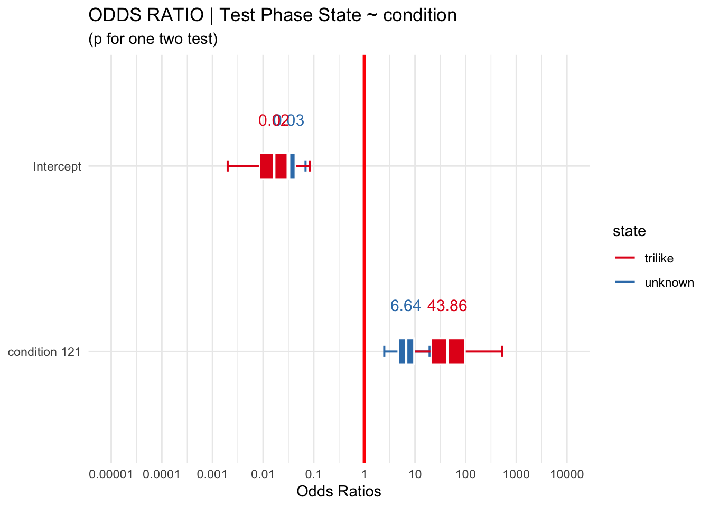
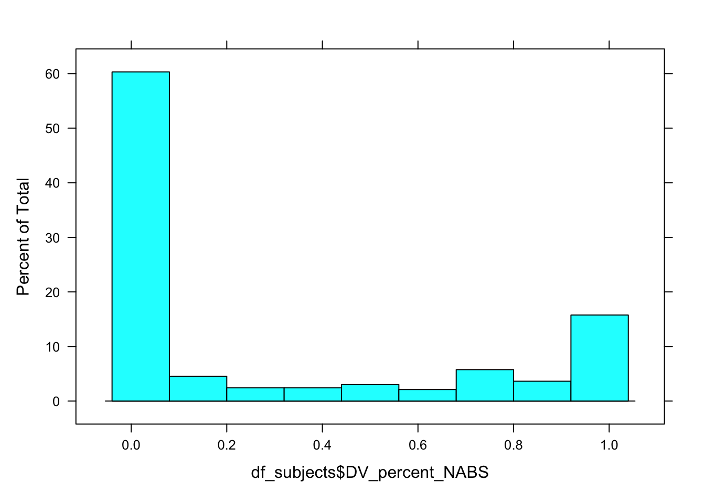
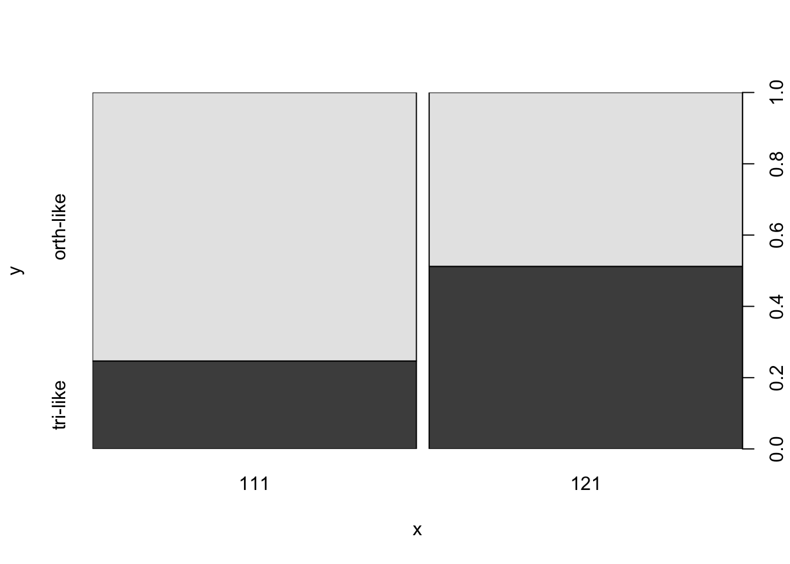
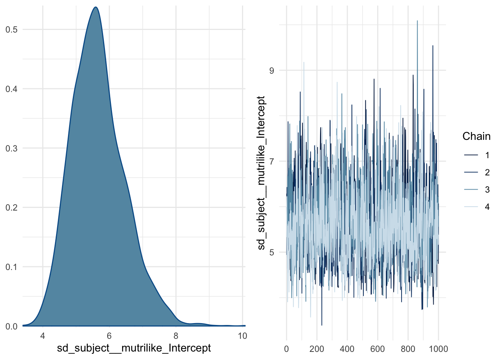
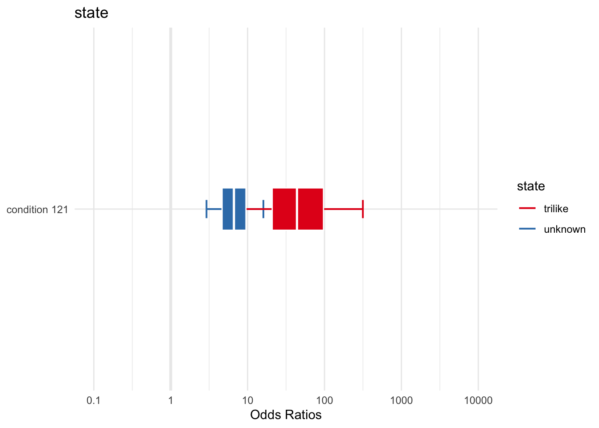
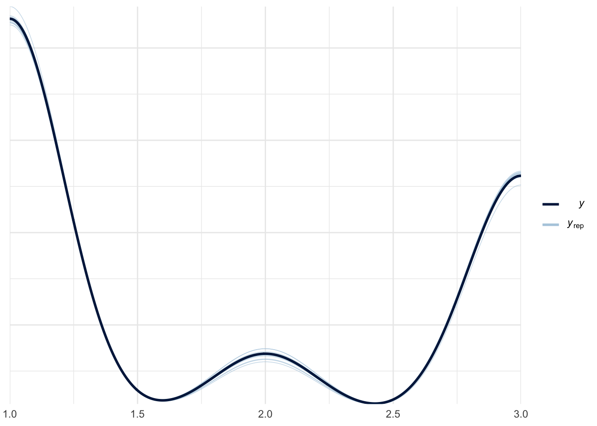
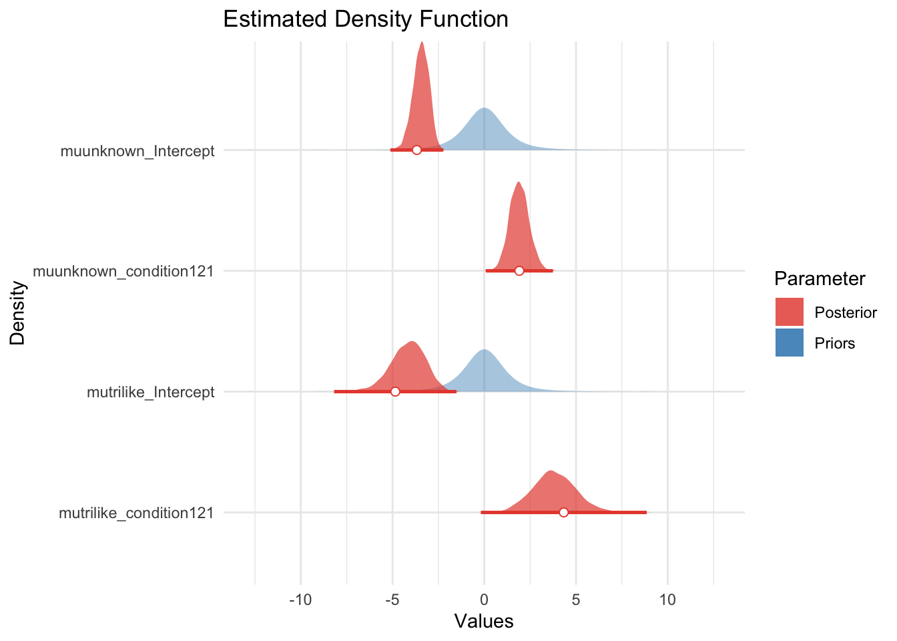
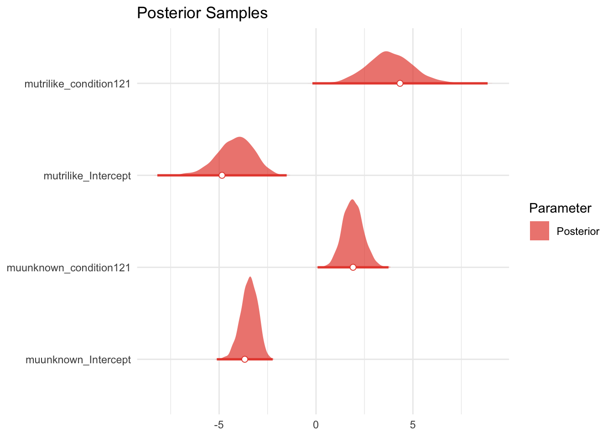

[subject level]: accuracy (number of test phase qs correct from total s_NABS)
predictor: condition [between-subjects factor]
Analysis Strategy
Wilcoxon-Rank Sum (Mann-Whitney) test on subject-level total accuracy of test phase (s_NABS)
Mixed Logistic Regression accuracy ~ condition + (1 | subject ) + (1 | question)
model effect of condition on probability of correct response [during test phase] while accounting for subject (and item-level?) effects
Alternatives
Ordinal Mixed Logistic Regression on scaled_score
OLS Linear Regression: bimodal distribution at tails makes the mean a poor predictor; LMs violate assumptions of normally distributed residuals; both absolute and scaled scores yield non-normal residuals; no transformation of the outcome variables yield normal residuals
Notes
Also exploring:
Hurdle model (mixture model w/ binomial + [poisson or negbinom count; 0s from 1 DGP)
Zero Inflated model (mixture model w/ binomial + poisson or negbinom count; 0s from 2 DGPs)
Beta regression hurdle model? (mixture with location and scale parameters [mean, variance] and hurdles for floor and ceiling effects)
title ="Descriptive Statistics of Response Accuracy (Test Phase % Correct)"tbl1 <- mosaic::favstats(~test_percent, data = df_s)
Registered S3 method overwritten by 'mosaic':
method from
fortify.SpatialPolygonsDataFrame ggplot2
CODE
tbl1 %>%kbl (caption = title) %>%kable_classic()
Descriptive Statistics of Response Accuracy (Test Phase % Correct)
min
Q1
median
Q3
max
mean
sd
n
missing
0
0
0.077
0.692
1
0.316
0.392
126
0
CODE
title ="Descriptive Statistics of Response Accuracy (Test Phase % Correct) BY CONDITION"tbl2 <- mosaic::favstats(test_percent ~ condition, data = df_s) tbl2 %>%kbl (caption = title) %>%kable_classic()
Descriptive Statistics of Response Accuracy (Test Phase % Correct) BY CONDITION
condition
min
Q1
median
Q3
max
mean
sd
n
missing
111
0
0.000
0.000
0.154
1
0.210
0.370
62
0
121
0
0.058
0.346
0.846
1
0.419
0.387
64
0
Across both conditions, overall accuracy on the task ranges from 0 to 100 with a mean of 31.624. We see that the distribution of this outcome variable is clearly bimodal: with modes near the floor (0% correct) and ceiling (100% correct) of the scale. This bimodality is sensical considering the nature of the task, where each item in the task indexes a different information extraction operation over the same coordinate system.
A score of 100% indicates that the participant correctly interpreted the interval-coordinate system throughout the task, starting at the first question. A score of 0% indicates the individual never correctly interpreted the coordinate system. A score somewhere inbetween indicates that an individual deciphered the coordinate system sometime over the course the task.
WILCOXON RANK SUM (Mann-Whitney Test) — SCORE
Non parametric alternative to t-test; compares median rather than mean by ranking data
Does not assume normality
Does not assume equal variance of samples (homogeneity of variance)
Test
CODE
(w <-wilcox.test(df_s$test_percent ~ df_s$condition,paired =FALSE, alternative ="less")) #less, greater
Wilcoxon rank sum test with continuity correction
data: df_s$test_percent by df_s$condition
W = 1243, p-value = 7e-05
alternative hypothesis: true location shift is less than 0
CODE
report(w)
Effect sizes were labelled following Funder's (2019) recommendations.
The Wilcoxon rank sum test with continuity correction testing the difference in ranks between df_s$test_percent and df_s$condition suggests that the effect is negative, statistically significant, and large (W = 1243.00, p < .001; r (rank biserial) = -0.37, 95% CI [-1.00, -0.22])
Visualize
CODE
#[manual one-sided test](results <- statsExpressions::two_sample_test(y = test_percent, x = condition, data = df_s,type ="nonparametric", alternative ="less",var.equal =FALSE))
# A tibble: 1 × 14
parameter1 parameter2 statistic p.value method alternative effectsize estimate
<chr> <chr> <dbl> <dbl> <chr> <chr> <chr> <dbl>
1 test_perc… condition 1243 7.25e-5 Wilco… less r (rank b… -0.373
# … with 6 more variables: conf.level <dbl>, conf.low <dbl>, conf.high <dbl>,
# conf.method <chr>, n.obs <int>, expression <list>
CODE
#:::::::: STATSPLOT | VIOLINggbetweenstats(y = test_percent, x = condition, data = df_s,results.subtitle =FALSE, #override default [two tailed] test dsiplaysubtitle = results$expression[[1]] )
Inference
A Mann-Whitney (Wilcoxon Rank Sum) test evaluating the difference in median accuracy score (across the entire task) indicates that performance was better in the impasse (vs) control condition.
MIXED LOGISTIC REGRESSION
Fit a mixed logistic regression (at the item level), predicting accuracy (absolute score) on all discriminating questions by condition; accounting for random effects of subject and item.
#confirm all factors is.factor(df_i$q) &&is.factor(df_i$subject) &&is.factor(df_i$pretty_condition) &&is.factor(df_i$accuracy)
[1] TRUE
CODE
#:: EMPTY MODEL (baseline, no random effect)print("Empty fixed model")
[1] "Empty fixed model"
CODE
m0 =glm(accuracy ~1, family ="binomial", data = df_i) # summary(m0)#:: RANDOM INTERCEPT SUBJECTprint("Subject intercept random model")
[1] "Subject intercept random model"
CODE
mm.rS <-glmer(accuracy ~ (1|subject), data = df_i, family ="binomial")# summary(mm.rS)# :: TEST random effectpaste("AIC decreases w/ new model?", m0$aic >AIC(logLik(mm.rS)))
[1] "AIC decreases w/ new model? TRUE"
CODE
test_lrt(m0,mm.rS) #same as anova(m0, m1, test = "Chi")
# Likelihood-Ratio-Test (LRT) for Model Comparison (ML-estimator)
Name | Model | df | df_diff | Chi2 | p
--------------------------------------------------
m0 | glm | 1 | | |
mm.rS | glmerMod | 2 | 1 | 1011.83 | < .001
CODE
paste("Likelihood Ratio test is significant? p = ",(test_lrt(m0,mm.rS))$p[2])
[1] "Likelihood Ratio test is significant? p = 4.82063151679782e-222"
CODE
#:: RANDOM INTERCEPT SUBJECT + ITEMprint("Subject Intercept + Item intercept random model")
[1] "Subject Intercept + Item intercept random model"
CODE
mm.rSQ <-glmer(accuracy ~ (1|subject) + (1|q), data = df_i, family ="binomial")#summary(mm.rSQ)# :: TEST random effectpaste("AIC decreases w/ new model?", AIC(logLik(mm.rS)) >AIC(logLik(mm.rSQ)))
[1] "AIC decreases w/ new model? TRUE"
CODE
test_lrt(mm.rS, mm.rSQ) #same as anova(m0, m1, test = "Chi")
Some of the nested models seem to be identical and probably only vary in
their random effects.
# Likelihood-Ratio-Test (LRT) for Model Comparison (ML-estimator)
Name | Model | df | df_diff | Chi2 | p
-------------------------------------------------
mm.rS | glmerMod | 2 | | |
mm.rSQ | glmerMod | 3 | 1 | 15.82 | < .001
CODE
paste("Likelihood Ratio test is significant? p = ",(test_lrt(mm.rS, mm.rSQ))$p[2])
Some of the nested models seem to be identical and probably only vary in
their random effects.
[1] "Likelihood Ratio test is significant? p = 0.0000697594950188617"
A likelihood ratio test indicates that a logistic regression model including random intercepts for SUBJECT and QUESTION explains more variance in the data than an empty [intercept only] model.
[1] "FIXED Condition + Subject & Item random intercepts"
CODE
mm.CrSQ <-glmer(accuracy ~ pretty_condition + (1|subject) + (1|q) ,data = df_i, family ="binomial")#summary(mm.CrSQ)paste("AIC decreases w/ new model", AIC(logLik(mm.rSQ)) >AIC(logLik(mm.CrSQ)) )
[1] "AIC decreases w/ new model TRUE"
CODE
test_lrt(mm.rSQ,mm.CrSQ) #same as anova(m0, m1, test = "Chi")
# Likelihood-Ratio-Test (LRT) for Model Comparison (ML-estimator)
Name | Model | df | df_diff | Chi2 | p
--------------------------------------------------
mm.rSQ | glmerMod | 3 | | |
mm.CrSQ | glmerMod | 4 | 1 | 18.66 | < .001
CODE
paste("Likelihood Ratio test is significant? p = ",(test_lrt(mm.rSQ,mm.CrSQ))$p[2])
[1] "Likelihood Ratio test is significant? p = 0.0000156066263742927"
A likelihood ratio test indicates adding CONDITION as a fixed effect to a logistic regression model including a fixed effect random intercepts for SUBJECT and QUESTION explains more variance in the data than random-effects only model.
Describe
CODE
# best modelm1 <- mm.CrSQ#::::::::: PRINT MODEL print("PREDICTOR MODEL")
[1] "PREDICTOR MODEL"
CODE
summary(m1)
Generalized linear mixed model fit by maximum likelihood (Laplace
Approximation) [glmerMod]
Family: binomial ( logit )
Formula: accuracy ~ pretty_condition + (1 | subject) + (1 | q)
Data: df_i
AIC BIC logLik deviance df.resid
1006 1028 -499 998 1634
Scaled residuals:
Min 1Q Median 3Q Max
-3.316 -0.136 -0.052 0.168 5.522
Random effects:
Groups Name Variance Std.Dev.
subject (Intercept) 22.216 4.713
q (Intercept) 0.308 0.555
Number of obs: 1638, groups: subject, 126; q, 13
Fixed effects:
Estimate Std. Error z value Pr(>|z|)
(Intercept) -5.51 1.02 -5.40 6.5e-08 ***
pretty_conditionimpasse 4.32 1.12 3.87 0.00011 ***
---
Signif. codes: 0 '***' 0.001 '**' 0.01 '*' 0.05 '.' 0.1 ' ' 1
Correlation of Fixed Effects:
(Intr)
prtty_cndtn -0.802
#:::::::: MANUAL ONE-SIDED SIGTEST #note: anova and chi square are always one-tailed, but that is independent of being one-sided#https://www.ibm.com/support/pages/can-one-get-one-tailed-tests-logistic-regression-dividing-significance-levels-half# one-sided (right tail) z test for B COEFFICIENT#SANITY CHECK 2-tailed test should match the model outputtt <-2*pnorm(summary(m1)$coefficients[2,3], lower.tail = F)paste("p value for two-tailed test, null B = 0 : ",round(tt,5))
[1] "p value for two-tailed test, null B = 0 : 0.00011"
CODE
ot <-pnorm(summary(m1)$coefficients[2,3], lower.tail = F)paste("BUT we want a one directional, null: B <= 0: ",round(ot,5))
[1] "BUT we want a one directional, null: B <= 0: 5e-05"
CODE
#:::::::: INTERPRET COEFFICIENTSse <-sqrt(diag(stats::vcov(m1)))# table of estimates with 95% CIpaste("LOG ODDS")
[1] "LOG ODDS"
CODE
(tab <-cbind(Est =fixef(m1), LL =fixef(m1) -1.96* se, UL =fixef(m1) +1.96* se))
Est LL UL
(Intercept) -5.51 -7.51 -3.51
pretty_conditionimpasse 4.32 2.14 6.51
CODE
paste("ODDS RATIOS")
[1] "ODDS RATIOS"
CODE
(e <-exp(tab))
Est LL UL
(Intercept) 0.00406 0.00055 0.0299
pretty_conditionimpasse 75.50665 8.46147 673.7900
Inference
In dissertation
To investigate the effect of condition on overall accuracy, we fit a mixed-effect binomial logistic regression model with random intercepts for subjects and items. The model including a fixed effect of condition performed significantly better than an intercepts-only baseline model (χ2(4): 18.66, p < 0.001). The explanatory power of the entire model is substantial (conditional R2 = 0.89) with the part related to the fixed effects (marginal R2) 0.15. Consistent with the pattern of results for the first question only, across the entire task, being in the impasse condition increases the odds of a correct response by a factor of 76 over the control condition \(e^{\beta_1}\) = 75.5, p < 0.001, one-tailed, 90% CI [8.46, 673.79].
Visualize
CODE
#:::::::: PLOT#GGSTATS | MODEL | LOG ODDS ggcoefstats(m1, output ="plot", conf.level =0.90) +labs(x ="Log Odds Estimate", subtitle ="p is for two tailed test")
#SJPLOT | MODEL | ODDS RATIO#library(sjPlot)plot_model(m1, vline.color ="red", show.intercept =TRUE, show.values =TRUE,p.threshold =0.1, #manually adjust to account for directional testci.lvl =0.90 ) +#manually adjusted for directional test labs(title ="Model Predicted Odds Ratio",subtitle ="",x ="Condition")
CODE
#SJPLOT | MODEL | PROBABILITIESplot_model(m1, type="eff",show.intercept =TRUE,show.values =TRUE,title ="Model Predicted Probability of Accuracy",axis.title =c("Condition","Probability of Accurate Response"))
Warning: To compile a LaTeX document with this table, the following commands must be placed in the document preamble:
\usepackage{booktabs}
\usepackage{siunitx}
\newcolumntype{d}{S[input-symbols = ()]}
To disable `siunitx` and prevent `modelsummary` from wrapping numeric entries in `\num{}`, call:
options("modelsummary_format_numeric_latex" = "plain")
This warning appears once per session.
Diagnostics
CODE
print("SANITY CHECK REPORTING")
[1] "SANITY CHECK REPORTING"
CODE
report(m1)
We fitted a logistic mixed model (estimated using ML and Nelder-Mead optimizer) to predict accuracy with pretty_condition (formula: accuracy ~ pretty_condition). The model included subject and q as random effects (formula: list(~1 | subject, ~1 | q)). The model's total explanatory power is substantial (conditional R2 = 0.89) and the part related to the fixed effects alone (marginal R2) is of 0.15. The model's intercept, corresponding to pretty_condition = control, is at -5.51 (95% CI [-7.51, -3.51], p < .001). Within this model:
- The effect of pretty condition [impasse] is statistically significant and positive (beta = 4.32, 95% CI [2.14, 6.51], p < .001; Std. beta = 4.32, 95% CI [2.14, 6.51])
Standardized parameters were obtained by fitting the model on a standardized version of the dataset. 95% Confidence Intervals (CIs) and p-values were computed using the Wald approximation.
Warning: Probably bad model fit. Only about 42% of the residuals are inside the error bounds.
TODO
DIAGNOSTICS: What in the world is happening with the normality of random effects plot? Do the fixed effects residuals need to be normally distributed?
What else needs to be interpreted with respect to the item and subject random effects?
TODO (ONLINE REPLICATION)
**TODO after verify correctness of approach for the lab-based sample (above)
H1A | Q1 ACCURACY
Do Ss in the IMPASSE condition have a higher likelihood of producing a correct response to the first question?
The graph comprehension task includes 15 questions completed in sequence. But the first question the reader encounters (Q1) is the most important, as it is their first exposure to the unconventional triangular coordinate system.
Research Question
Does the frequency of correct (vs) incorrect responses on the first question differ by condition? [Is response accuracy independent of condition?]
Hypothesis
H1A | Ss in the IMPASSE condition will have a higher likelihood of correctly responding to the first question than those in the CONTROL condition
Data
data: df_items where q == 1
outcome: accuracy ( factor(incorrect/correct) from score_niceABS [absolute score]
predictor: condition [between-subjects factor]
Analysis Strategy
Logistic Regression on accuracy predicted by condition
account for difference in odds of correct score by condition
Alternatives:
Chi-Square test of independence on outcome accuracy by condition
Notes
CHIQ SQR is simplest method to examine independence of two categorical factors; LOGISTIC REGRESSION is recommended for binomial ~ continuous; though with regression we can quantify the size of the effect and overall model fit
independence assumption : (CHI SQR) as we only consider responses on the first question, each observation corresponds to an individual subject, and are thus independent
cell frequency : (CHI SQR) expected frequency in each cell of the contingency table is greater than 5 (more than 5 correct , more than 5 incorrect responses)
CODE
#:::::::: PREP DATAdf <- df_items %>%filter(q==1) %>%mutate(accuracy =recode_factor(score_niceABS, "0"="incorrect","1"="correct")) # #:::::::: GROUPED PROPORTIONAL BAR CHART# gf_props(~accuracy, fill = ~pretty_condition,# position = position_dodge(), data = df) %>%# gf_facet_grid(~pretty_mode) +# labs(x = "Correct Response on Q 1",# title = "Accuracy on First Question by Condition",# subtitle="Impasse Condition yields a greater proportion of correct responses") #theme(legend.position = "none")#:::::::: STACKED BAR CHARTdf %>%ggplot(data = .,mapping =aes(x = pretty_condition,fill = accuracy)) +geom_bar(position ="fill" ) +#,color = "black") +scale_fill_brewer(palette ="Set1") +facet_wrap(~pretty_mode) +labs(#y = "Correct Response on Q 1",title ="Accuracy on First Question by Condition",x ="Condition",fill ="",subtitle="Impasse Condition yields a greater proportion of correct responses")
A proportional bar chart visualizing the proportion of incorrect (vs) correct responses in each condition for each data collection modality (left/right facet) reveals that the pattern of responses appear the same regardless of the data collection modality. In both data collection sessions, the proportion of incorrect responses is much greater than the proportion of correct responses, regardless of condition (marginal probability of incorrect). In the impasse condition, the difference in proportions is smaller than the control condition (conditional probability of success in impasse; (i.e) There are more correct responses in the impasse condition than the control condition).
(LAB)
CODE
#:::::::: IN PERSON ONLYdf <- df_items %>%filter(mode =="lab-synch") %>%filter(q==1) %>%mutate(accuracy =recode_factor(score_niceABS, "0"="incorrect","1"="correct")) #::::::::::::DESCRIPTIVEStable(df$accuracy, df$condition) %>%addmargins(2) %>%#display sum for rowprop.table(margin=2) %>%#return proportion (of column)addmargins(1) #sanity check sum of columns
111 121 Sum
incorrect 0.839 0.703 0.770
correct 0.161 0.297 0.230
Sum 1.000 1.000 1.000
CODE
table(df$accuracy, df$condition) %>%addmargins(2) %>%#display sum for rowaddmargins(1) #sanity check sum of columns
111 121 Sum
incorrect 52 45 97
correct 10 19 29
Sum 62 64 126
LOGISTIC REGRESSION
Fit a logistic regression predicting accuracy (absolute score) (n = 126) by condition (k = 2).
Parameter estimate: \(\beta_{0}\) = Log Odds of (correct) responses in CONTROL condition
\(e^{\beta_{0}}\) = ODDS of correct response in CONTROL condition
Parameter estimate: \(\beta_{1}\) = \(\beta_{1impasse}\) Log Odds (Log OR; change in odds for correct response in impasse (vs) control [log scale])
\(e^{\beta_{1}}\) = ODDS RATIO of correct response in IMPASSE (vs) CONTROL
Null hypothesis:\(\beta_{impasse} \le 0\) the odds for a correct response does not change, or decreases
Alternative hypothesis:\(\beta_{impasse} \gt 0\) the odds of a correct response increases
Fit Model
First, we fit a logistic regression with condition as predictor, and compare its fit to an empty (intercept-only) model.
CODE
# MODEL FITTING ::::::::#: 1 EMPTY MODEL baseline glm model intercept onlym0 =glm(accuracy ~1, data = df, family ="binomial")# print("EMPTY MODEL")# summary(m0)#: 2 CONDITION modelm1 <-glm( accuracy ~ pretty_condition, data = df, family ="binomial")# print("PREDICTOR MODEL")# summary(m1)#: 3 TEST SUPERIOR FITpaste("AIC wth predictor is lower than empty model?", m0$aic > m1$aic)
[1] "AIC wth predictor is lower than empty model? TRUE"
CODE
test_lrt(m0,m1) #same as anova(m0, m1, test = "Chi")
# Likelihood-Ratio-Test (LRT) for Model Comparison (ML-estimator)
Name | Model | df | df_diff | Chi2 | p
------------------------------------------
m0 | glm | 1 | | |
m1 | glm | 2 | 1 | 3.31 | 0.069
CODE
paste("Likelihood Ratio test is significant? p = ",(test_lrt(m0,m1))$p[2])
[1] "Likelihood Ratio test is significant? p = 0.0687084837283363"
The Condition predictor decreases AIC, but the Likelihood Ratio Test is marginal. We proceed to examine the predictor model, as we plan to do a 1-tailed NHST .
Describe
CODE
# DESCRIBE MODEL ::::::::::::::::::::::::::::::::::::: print("PREDICTOR MODEL [default two-tailed sig test]")
[1] "PREDICTOR MODEL [default two-tailed sig test]"
CODE
summary(m1)
Call:
glm(formula = accuracy ~ pretty_condition, family = "binomial",
data = df)
Deviance Residuals:
Min 1Q Median 3Q Max
-0.839 -0.839 -0.593 -0.593 1.910
Coefficients:
Estimate Std. Error z value Pr(>|z|)
(Intercept) -1.649 0.345 -4.77 1.8e-06 ***
pretty_conditionimpasse 0.786 0.441 1.79 0.074 .
---
Signif. codes: 0 '***' 0.001 '**' 0.01 '*' 0.05 '.' 0.1 ' ' 1
(Dispersion parameter for binomial family taken to be 1)
Null deviance: 135.95 on 125 degrees of freedom
Residual deviance: 132.63 on 124 degrees of freedom
AIC: 136.6
Number of Fisher Scoring iterations: 4
# MANUAL ONE-SIDED SIGTEST ::::::::::::::::::::::::::: # one-sided (right tail) z test for B COEFFICIENT#https://stats.stackexchange.com/questions/330655/strategy-for-a-one-sided-test-of-glms-coefficients#SANITY CHECK 2-tailed test should match the model outputtt <-2*pnorm(summary(m1)$coefficients[2,3], lower.tail = F)paste("p value for two-tailed test, null B = 0 : ",round(tt,3))
[1] "p value for two-tailed test, null B = 0 : 0.074"
CODE
ot <-pnorm(summary(m1)$coefficients[2,3], lower.tail = F)paste("BUT we want a one tailed directional, null: B <= 0: ",round(ot,3))
[1] "BUT we want a one tailed directional, null: B <= 0: 0.037"
CODE
paste("adjusted confint for directional hypothesis")
[1] "adjusted confint for directional hypothesis"
CODE
(dcint <-confint(m1, level =0.90)) # get 90% for right side))
# Retrieve predictions as probabilities # (for each level of the predictor)pred.control <-predict(m1,data.frame(pretty_condition="control"),type="response")paste("Probability of success in control,", pred.control)
[1] "Probability of success in control, 0.161290322580645"
CODE
pred.impasse <-predict(m1,data.frame(pretty_condition="impasse"),type="response")paste("Probability of success in impasse,", pred.impasse)
[1] "Probability of success in impasse, 0.296875000000275"
Visualize
CODE
#:::::::: PLOT#GGSTATS | MODEL | LOG ODDS ggcoefstats(m1, output ="plot", conf.level =0.90) +labs(x ="Log Odds Estimate", title ="LOGODDS | Q1 Accuracy ~ condition",subtitle ="(p is for two tailed test)")
CODE
#SJPLOT | MODEL | ODDS RATIO#library(sjPlot)plot_model(m1, type ="est",vline.color ="red", show.intercept =TRUE, show.values =TRUE,p.threshold =0.1, #manually adjust to account for directional testci.lvl =0.90 ) +#manually adjusted for directional test labs(title ="ODDS RATIO | Q1 Accuracy ~ condition",subtitle ="(p for one sided test)",x ="Condition")
CODE
#SJPLOT | MODEL | PROBABILITIESplot_model(m1, type="eff",show.data =TRUE, jitter =TRUE,title ="MODEL PREDICTION | Q1 Accuracy ~ condition",axis.title =c("Condition","Probability of Accurate Response"))
$pretty_condition
CODE
#SJPLOT | MODEL | TABLE# tab_model(m1)
Diagnostics
CODE
print("SANITY CHECK REPORTING")
[1] "SANITY CHECK REPORTING"
CODE
report(m1)
We fitted a logistic model (estimated using ML) to predict accuracy with pretty_condition (formula: accuracy ~ pretty_condition). The model's explanatory power is weak (Tjur's R2 = 0.03). The model's intercept, corresponding to pretty_condition = control, is at -1.65 (95% CI [-2.39, -1.02], p < .001). Within this model:
- The effect of pretty condition [impasse] is statistically non-significant and positive (beta = 0.79, 95% CI [-0.06, 1.68], p = 0.074; Std. beta = 0.79, 95% CI [-0.06, 1.68])
Standardized parameters were obtained by fitting the model on a standardized version of the dataset. 95% Confidence Intervals (CIs) and p-values were computed using
We fit a logistic regression model to explore the effect of experimental condition on probability of a correct answer on the first question. In this model, the effect of condition is statistically significant (z = 1.79, p = 0.04, one-tailed). The model predicts that the odds of a correct response on the first question in the impasse condition increase by nearly 120% (\(e^{beta_{impasse}}\)= 2.19, 95% CI [1.08, 4.63]) over the control condition. The intercept\(\beta_{0}\)parameter is also significant, (\(e^{b_{0}}\)= 0.19, p < 0.001, 95% CI [0.11, 0.33]) indicating that the odds of a correct response in the control condition are significantly less than even (less than 50/50 chance of correct response in control condition).
Equivalent statements:
being in impasse condition increases log odds of correct response by 0.79 (over control)
being in impasse increases odds of correct response in impasse over control increases by factor of 2.19
probability of correct response in impasse predicted as 30%, vs only 16% in control condition
TODO
Are these residuals OK? I didn’t think normally distributed residuals were an assumption for logistic regression.
interpretation/reporting of model fit?
sanity check correct interpretation of coefficients & reporting
SANITY CHECK:: meaning of b0 estimate
b0 parameter is odds of (+) response on reference [control]
significant b0 indicates that odds of a (+) are (significantly) different from 1:1 (i.e. not an equal probability of correct vs incorrect responses in control)
(ONLINE REPLICATION)
CODE
#:::::::: ONLINE ONLYdf <- df_items %>%filter(mode =="asynch") %>%filter(q==1) %>%mutate(accuracy =recode_factor(score_niceABS, "0"="incorrect","1"="correct")) #::::::::::::DESCRIPTIVEStable(df$accuracy, df$condition) %>%addmargins(2) %>%#display sum for rowprop.table(margin=2) %>%#return proportion (of column)addmargins(1) #sanity check sum of columns
111 121 Sum
incorrect 0.875 0.722 0.794
correct 0.125 0.278 0.206
Sum 1.000 1.000 1.000
CODE
table(df$accuracy, df$condition) %>%addmargins(2) %>%#display sum for rowaddmargins(1) #sanity check sum of columns
111 121 Sum
incorrect 84 78 162
correct 12 30 42
Sum 96 108 204
LOGISTIC REGRESSION
Fit a logistic regression predicting accuracy (absolute score) (n = r nrow(df)) by condition. (k = 2).
Parameter estimate:\(\beta_{0}\)= Log Odds of (correct) responses in CONTROL condition
\(e^{\beta_{0}}\)= ODDS of correct response in CONTROL condition Parameter estimate:
\(\beta_{1}\)=\(\beta_{1impasse}\)Log Odds (Log OR; change in odds for correct response in impasse (vs) control [log scale])
\(e^{\beta_{1}}\)= ODDS RATIO of correct response in IMPASSE (vs) CONTROL
Null hypothesis:\(\beta_{impasse} \le 0\)the odds for a correct response does not change, or decreases
Alternative hypothesis:\(\beta_{impasse} \gt 0\)the odds of a correct response increases
Fit Model
First, we fit a logistic regression with condition as predictor, and compare its fit to an empty (intercept-only) model.
CODE
# MODEL FITTING ::::::::#: 1 EMPTY MODEL baseline glm model intercept onlym0 =glm(accuracy ~1, data = df, family ="binomial")# print("EMPTY MODEL")# summary(m0)#: 2 CONDITION modelm1 <-glm( accuracy ~ pretty_condition, data = df, family ="binomial")# print("PREDICTOR MODEL")# summary(m1)#: 3 TEST SUPERIOR FITpaste("AIC wth predictor is lower than empty model?", m0$aic > m1$aic)
[1] "AIC wth predictor is lower than empty model? TRUE"
CODE
test_lrt(m0,m1) #same as anova(m0, m1, test = "Chi")
# Likelihood-Ratio-Test (LRT) for Model Comparison (ML-estimator)
Name | Model | df | df_diff | Chi2 | p
------------------------------------------
m0 | glm | 1 | | |
m1 | glm | 2 | 1 | 7.49 | 0.006
CODE
paste("Likelihood Ratio test is significant? p = ",(test_lrt(m0,m1))$p[2])
[1] "Likelihood Ratio test is significant? p = 0.00621908608981449"
The Condition predictor decreases AIC, and the Likelihood Ratio Test indicates the predictor model is a better fit.
Describe
CODE
# DESCRIBE MODEL ::::::::::::::::::::::::::::::::::::: print("PREDICTOR MODEL [default two-tailed sig test]")
[1] "PREDICTOR MODEL [default two-tailed sig test]"
CODE
summary(m1)
Call:
glm(formula = accuracy ~ pretty_condition, family = "binomial",
data = df)
Deviance Residuals:
Min 1Q Median 3Q Max
-0.807 -0.807 -0.517 -0.517 2.039
Coefficients:
Estimate Std. Error z value Pr(>|z|)
(Intercept) -1.946 0.309 -6.31 2.9e-10 ***
pretty_conditionimpasse 0.990 0.376 2.63 0.0084 **
---
Signif. codes: 0 '***' 0.001 '**' 0.01 '*' 0.05 '.' 0.1 ' ' 1
(Dispersion parameter for binomial family taken to be 1)
Null deviance: 207.45 on 203 degrees of freedom
Residual deviance: 199.96 on 202 degrees of freedom
AIC: 204
Number of Fisher Scoring iterations: 4
# MANUAL ONE-SIDED SIGTEST ::::::::::::::::::::::::::: # one-sided (right tail) z test for B COEFFICIENT#https://stats.stackexchange.com/questions/330655/strategy-for-a-one-sided-test-of-glms-coefficients#SANITY CHECK 2-tailed test should match the model outputtt <-2*pnorm(summary(m1)$coefficients[2,3], lower.tail = F)paste("p value for two-tailed test, null B = 0 : ",round(tt,3))
[1] "p value for two-tailed test, null B = 0 : 0.008"
CODE
ot <-pnorm(summary(m1)$coefficients[2,3], lower.tail = F)paste("BUT we want a one tailed directional, null: B <= 0: ",round(ot,3))
[1] "BUT we want a one tailed directional, null: B <= 0: 0.004"
CODE
paste("adjusted confint for directional hypothesis")
[1] "adjusted confint for directional hypothesis"
CODE
(dcint <-confint(m1, level =0.90)) # get 90% for right side))
# Retrieve predictions as probabilities # (for each level of the predictor)pred.control <-predict(m1,data.frame(pretty_condition="control"),type="response")paste("Probability of success in control,", pred.control)
[1] "Probability of success in control, 0.125000000004466"
CODE
pred.impasse <-predict(m1,data.frame(pretty_condition="impasse"),type="response")paste("Probability of success in impasse,", pred.impasse)
[1] "Probability of success in impasse, 0.277777777778245"
Visualize
CODE
#:::::::: PLOT#GGSTATS | MODEL | LOG ODDS ggcoefstats(m1, output ="plot", conf.level =0.90) +labs(x ="Log Odds Estimate", title ="LOGODDS | Q1 Accuracy ~ condition",subtitle ="(p is for two tailed test)")
CODE
#SJPLOT | MODEL | ODDS RATIO#library(sjPlot)plot_model(m1, vline.color ="red", show.intercept =TRUE, show.values =TRUE,p.threshold =0.1, #manually adjust to account for directional testci.lvl =0.90 ) +#manually adjusted for directional test labs(title ="ODDS RATIO | Q1 Accuracy ~ condition",subtitle ="(p for one sided test)",x ="Condition")
CODE
#SJPLOT | MODEL | PROBABILITIESplot_model(m1, type="eff",show.data =TRUE, jitter =TRUE,title ="MODEL PREDICTION | Q1 Accuracy ~ condition",axis.title =c("Condition","Probability of Accurate Response"))
$pretty_condition
CODE
#SJPLOT | MODEL | TABLE# tab_model(m1)
Diagnostics
CODE
print("SANITY CHECK REPORTING")
[1] "SANITY CHECK REPORTING"
CODE
report(m1)
We fitted a logistic model (estimated using ML) to predict accuracy with pretty_condition (formula: accuracy ~ pretty_condition). The model's explanatory power is weak (Tjur's R2 = 0.04). The model's intercept, corresponding to pretty_condition = control, is at -1.95 (95% CI [-2.60, -1.38], p < .001). Within this model:
- The effect of pretty condition [impasse] is statistically significant and positive (beta = 0.99, 95% CI [0.27, 1.76], p = 0.008; Std. beta = 0.99, 95% CI [0.27, 1.76])
Standardized parameters were obtained by fitting the model on a standardized version of the dataset. 95% Confidence Intervals (CIs) and p-values were computed using
We fit a logistic regression model to explore the effect of experimental condition on probability of a correct answer on the first question. In this model, the effect of condition is statistically significant (z = 2.63, p = 0.004, one-tailed). The model predicts that the odds of a correct response on the first question in the impasse condition increase by nearly 170% (\(e^{beta_{impasse}}\) = 2.69, 95% CI [1.47, 5,11]) over the control condition.The intercept\(\beta_{0}\)parameter is also significant, (\(e^{b_{0}}\)= 0.14, p < 0.001, 95% CI [0.08, 0.23]) indicating that the odds of a correct response in the control condition are significantly less than even (less than 50/50 chance of correct response in control condition).
Equivalent statements:
being in impasse condition increases log odds of correct response by 0.99 (over control)
being in impasse increases odds of correct response in impasse over control increases by factor of 2.69
probability of correct response in impasse predicted as 28%, vs only 12% in control condition
H1A | Q1 INTERPRETATION STATE
Do Ss in the IMPASSE condition offer less-orthogonal interpretations on first question?
While absolute accuracy score tells us whether a participant successfully interpreted the coordinate system, it doesn’t allow us to differentiate between different kinds of incorrect interpretations. Here we examine the (categorical) interpretation state type based on the nature of subject’s response, and determine if these interpretations differ by experimental condition. State is a 3-category derived response variable that groups the following interpretations:
“orthogonal-like” [reference category] includes orthogonal and satisficing responses ==> indicates a primarily orthogonal state of coordinate system understanding
“unknown” includes: blank, reference point, responses that can’t be classified (including selecting all datapoints) => indicates an uncertain or unidentifiable state of coordinate system understanding, but one that is distinctly not orthogonal nor triangular
“triangle-like” includes correct triangular and ‘lines connecting’ responses as well as responses that include both orthogonal and triangular answers => indicates some degree of angular/triangular coordinate understanding
Research Question
Does Ss in the impasse condition produce less orthogonal responses on the first question?
Hypothesis
H1A | Ss in the IMPASSE condition will have a higher likelihood of producing unknown and and triangle-like response states, relative to orthogonal response states, on the first question
Data
data: df_items where q == 1
outcome: state ( 3 level factor from 5 level high_interpretation )
predictor: condition [between-subjects factor]
Analysis Strategy
Multinomial (Logistic) Regression on state predicted by condition
Alternative:
Ordinal regression on state; but model doesn’t satisfy proportional odds assumption (parallel slopes)
Multinomial or Ordinal regression on high_interpretation (5 category interpretation state which distinguishes between uncertain (blank, reference) unclassifiable, triangle-like and true triangular.) There are some cells with zeros, however (no uncertain responses in control) which means the model can’t accurately estimate those comparisons
CODE
#:::::::: PREP DATAdf <- df_items %>%filter(q==1) # #:::::::: GROUPED PROPORTIONAL BAR CHART# gf_props(~high_interpretation, fill = ~pretty_condition,# position = position_dodge(), data = df) %>%# gf_facet_grid(~pretty_mode) +# labs(x = "Correct Response on Q 1",# title = "Interpretation on First Question by Condition",# subtitle="") #theme(legend.position = "none")#:::::::: STACKED BAR CHARTdf %>%ggplot(data = .,mapping =aes(x = pretty_condition,fill = state)) +geom_bar(position ="fill" ) +#,color = "black") +scale_fill_brewer(palette ="Set1") +facet_wrap(~pretty_mode) +labs(#y = "Correct Response on Q 1",title ="Interpretation on First Question by Condition",x ="Condition",fill ="",subtitle="")
A proportional bar chart visualizing the proportion of each interpretations type by condition for each data collection modality (left/right facet) reveals that the pattern of responses are similar regardless of the data collection modality, by differ by condition. In the impasse condition, there are more triangular responses than in control. We see that around half of the ‘incorrect’ (i.e. not triangular) responses in the impasse condition are not orthogonal-like, but “other/unknown”.
(LAB)
CODE
#:::::::: IN PERSON ONLYdf <- df_items %>%filter(mode =="lab-synch") %>%filter(q==1) #::::::::::::DESCRIPTIVEStable(df$state, df$pretty_condition) %>%addmargins(2) %>%#display sum for rowprop.table(margin=2) %>%#return proportion (of column)addmargins(1) #sanity check sum of columns
control impasse Sum
orth-like 0.8065 0.3125 0.5556
unknown 0.0161 0.2812 0.1508
tri-like 0.1774 0.4062 0.2937
Sum 1.0000 1.0000 1.0000
CODE
(t <-table(df$state, df$pretty_condition) %>%addmargins(2) %>%#display sum for rowaddmargins(1)) #sanity check sum of columns
control impasse Sum
orth-like 50 20 70
unknown 1 18 19
tri-like 11 26 37
Sum 62 64 126
MULTINOMIAL REGRESSION
Does condition affect the response state of Q1?
Fit a logistic regression predicting interpretation state (k=3) by condition(k = 2).
2 equations will be estimated (# categories - 1); each representing the odds of answering in that particular interpretation (vs) the reference category (orthogonal answer) [essentially a series of binary logistic regressions, but instead of incorrect/correct, comparing [reference category] vs [this category])
For each equation:
\(\beta_{0}\)= Log Odds of [this category type vs. reference category type) response in CONTROL condition
\(e^{\beta_{0}}\)= ODDS of [this category type vs. reference category type] response in CONTROL condition
\(\beta_{1}\)=\(\beta_{1impasse}\)Log Odds (Log OR; change in odds for [this category] type response in impasse (vs) control [log scale])
\(e^{\beta_{1}}\)= ODDS RATIO of [this. vs reference category type] response in IMPASSE (vs) CONTROL
Two-tailed NHST Null hypothesis:\(\beta_{impasse} = 0\)the odds for [this category of response vs. reference] are not different for IMPASSE condition
Alternative hypothesis:\(\beta_{impasse} \ne 0\)the odds of [this category of response vs. reference] increases or decreases for IMPASSE condition
Fit Model
CODE
#check reference level print("Categories (first is reference)")
[1] "Categories (first is reference)"
CODE
levels(df$state)
[1] "orth-like" "unknown" "tri-like"
CODE
#FIT EMPTY MODEL# print("EMPTY MODEL")catm.0<-multinom(state ~1, data = df)
# weights: 6 (2 variable)
initial value 138.425148
final value 122.428550
converged
CODE
# summary(catm.0)#FIT PREDICTOR MODEL# print("PREDICTOR MODEL")catm <-multinom(formula = state ~ pretty_condition, data = df, model =TRUE)
# weights: 9 (4 variable)
initial value 138.425148
iter 10 value 103.421004
iter 10 value 103.421004
final value 103.421004
converged
CODE
# summary(catm)#COMPARE MODEL FITpaste("AIC wth predictor is lower than empty model?", catm.0$AIC > catm$AIC)
[1] "AIC wth predictor is lower than empty model? TRUE"
CODE
test_lrt(catm.0, catm)
# Likelihood-Ratio-Test (LRT) for Model Comparison (ML-estimator)
Name | Model | df | df_diff | Chi2 | p
-------------------------------------------------
catm.0 | multinom | 2 | | |
catm | multinom | 4 | 2 | 38.02 | < .001
CODE
##compare bayesian version#library(brms)# bm1 <- brm( state ~ pretty_condition, data = df, family = "categorical")# summary(bm1)# plot_model(bm1)# report(bm1)# coefficient estimates are very simliar to catm. super cool!##compare mclogit version#"baseline-category logit model# https://www.elff.eu/software/mclogit/manual/mblogit/# blm1 <- mblogit(state ~ pretty_condition , data = df)# summary(blm1)#identical to catm. super cool!
AIC in predictor model is less than empty model, and likelihood ratio test indicates predictor model is significantly better fit to the sample data than the empty (intercept only) model.
# weights: 6 (2 variable)
initial value 138.425148
final value 122.428550
converged
Analysis of Deviance Table (Type II tests)
Response: state
LR Chisq Df Pr(>Chisq)
pretty_condition 38 2 5.6e-09 ***
---
Signif. codes: 0 '***' 0.001 '**' 0.01 '*' 0.05 '.' 0.1 ' ' 1
CODE
# calculate z-statistics of coefficientsz_stats <-summary(catm)$coefficients/summary(catm)$standard.errors# convert to p-valuesp_values <- (1-pnorm(abs(z_stats)))*2# display p-values in transposed data frame(p_values <-data.frame(p = (p_values)))
Being in the IMPASSE condition increases the odds of giving an unknown (potentially nonsense) or blank/uncertain response rather than an orthogonal (or satisficing) response by a factor of 45 (z = 3.58, p < 0.001) . Participants in the impasse condition were 45x as likely to give an unknown/uncertain response rather than an orthogonal response compared to participants in control.
Being in the IMPASSE condition increases the odds of giving ‘triangle-like’ response rather than an orthogonal (or satisficing) response by a factor of 5.90 (z = 3.98, p < 0.001 ). Participants in the impasse condition were almost 6x as likely to give an a triangular response rather than an orthogonal response compared to participants in control.
As with the (binary) logistic regression on accuracy ~ condition, significant model intercepts indicate that the odds of being in any particular response state (vs) orthogonal are significantly different than 1 in the control condition. (i.e. not 1:1 odds or 50% chance of being in that response state. Orthogonal is a much more probable response state in control)
[need to to double check interpretation, but I think that the OR intercepts converted to probabilities equate to the marginal probability of being in each state in the control condition. which makes sense. I think.?]
IF I change reference category for condition… then the intercepts should no longer be significant. The b1 coefficients should still be significant, but with changed sign (much less likely) [Yup! this works!]
Visualize
CODE
#:::::::: PLOT#GGSTATS | MODEL | LOG ODDS ggcoefstats(catm, output ="plot", # conf.level = 0.90,exclude.intercept =FALSE) +labs(x ="Log Odds Estimate", title ="LOGODDS | Q1 State ~ condition",subtitle ="(p is for two tailed test)")
CODE
#SJPLOT | MODEL | ODDS RATIO#library(sjPlot)plot_model(catm, vline.color ="red", show.intercept =TRUE, show.values =TRUE,p.threshold =0.05, #can manually adjust to account for directional testci.lvl =0.95 ) +#can manually adjusted for directional test labs(title ="ODDS RATIO | Q1 State ~ condition",subtitle ="(p for one two test)",x ="Condition")
CODE
#SJPLOT | MODEL | PROBABILITIESplot_model(catm, type="eff",title ="MODEL PREDICTION | Q1 State ~ condition",axis.title =c("Condition","Probability of Response State"))
$pretty_condition
CODE
#SJPLOT | MODEL | TABLE#tab_model(catm)
Diagnostics
CODE
#EXAMINE PREDICTIONS#create sample data frametest <-data.frame(pretty_condition =c("control", "impasse"))pred <-predict(catm, newdata = test, "probs")paste("Predicted Probability of Being in Each State")
[1] "Predicted Probability of Being in Each State"
Can't calculate log-loss.
Can't calculate proper scoring rules for ordinal, multinomial or cumulative link models.
# Indices of model performance
AIC | BIC | R2 | R2 (adj.) | RMSE | Sigma
-----------------------------------------------------
214.842 | 226.187 | 0.155 | 0.147 | 0.404 | 1.302
CODE
DescTools::PseudoR2(catm, which =c("McFadden", "CoxSnell", "Nagelkerke"))
Registered S3 method overwritten by 'DescTools':
method from
reorder.factor gdata
McFadden CoxSnell Nagelkerke
0.155 0.260 0.304
CODE
#General Goodness of Fit#library(generalhoslem)#logitgof(df$state, catm$fitted.values, g = 3)#A non-significant p value indicates that there is no evidence that the observed and expected frequencies differ (i.e., evidence of good fit).#don't fret! this version of the hoslem-lem test is problematic with fewer than 10 input variableschisq.test(df$state,predict(catm)) #actual states VS predicted states
Pearson's Chi-squared test
data: df$state and predict(catm)
X-squared = 34, df = 2, p-value = 4e-08
CODE
# The chi-square test tests the decrease in unexplained variance from the baseline model to the final model# print("MODEL DIAGNOSTICS")#check_model(catm) can't do overall diagnostics, have to do them on individual model equations
TODO
interpretation/reporting of model fit?
sanity check correct interpretation of coefficients & reporting
diagnostics on individual model equations
calculate 1-tailed p values to match directional hypothesis
(ONLINE REPLICATION)
CODE
#:::::::: ONLINE ONLYdf <- df_items %>%filter(mode =="asynch") %>%filter(q==1) #::::::::::::DESCRIPTIVEStable(df$state, df$pretty_condition) %>%addmargins(2) %>%#display sum for rowprop.table(margin=2) %>%#return proportion (of column)addmargins(1) #sanity check sum of columns
control impasse Sum
orth-like 0.8229 0.2315 0.5098
unknown 0.0312 0.3889 0.2206
tri-like 0.1458 0.3796 0.2696
Sum 1.0000 1.0000 1.0000
CODE
(t <-table(df$state, df$pretty_condition) %>%addmargins(2) %>%#display sum for rowaddmargins(1)) #sanity check sum of columns
control impasse Sum
orth-like 79 25 104
unknown 3 42 45
tri-like 14 41 55
Sum 96 108 204
MULTINOMIAL REGRESSION
Does condition affect the response state of Q1?
Fit a logistic regression predicting interpretation (k=3) by condition(k = 2).
2 equations will be estimated (# categories - 1); each representing the odds of answering in that particular interpretation (vs) the reference category (orthogonal answer) [essentially a series of binary logistic regressions, but instead of incorrect/correct, comparing [reference category] vs [this category])
For each equation:
\(\beta_{0}\)= Log Odds of [this category type vs. reference category type) response in CONTROL condition
\(e^{\beta_{0}}\)= ODDS of [this category type vs. reference category type] response in CONTROL condition
\(\beta_{1}\)=\(\beta_{1impasse}\)Log Odds (Log OR; change in odds for [this category] type response in impasse (vs) control [log scale])
\(e^{\beta_{1}}\)= ODDS RATIO of [this. vs reference category type] response in IMPASSE (vs) CONTROL
Two-tailed NHST Null hypothesis:\(\beta_{impasse} = 0\)the odds for [this category of response vs. reference] does not change, or decreases
Alternative hypothesis:\(\beta_{impasse} \ne 0\)the odds of [this category of response vs. reference] increases
Fit Model
CODE
#check reference level print("Categories (first is reference)")
[1] "Categories (first is reference)"
CODE
levels(df$state)
[1] "orth-like" "unknown" "tri-like"
CODE
#FIT EMPTY MODEL# print("EMPTY MODEL")catm.0<-multinom(state ~1, data = df)
# weights: 6 (2 variable)
initial value 224.116907
final value 210.176688
converged
CODE
# summary(catm.0)#FIT PREDICTOR MODEL# print("PREDICTOR MODEL")catm <-multinom(formula = state ~ pretty_condition, data = df, model =TRUE)
# weights: 9 (4 variable)
initial value 224.116907
iter 10 value 168.708105
iter 10 value 168.708105
final value 168.708105
converged
CODE
# summary(catm)#COMPARE MODEL FITpaste("AIC wth predictor is lower than empty model?", catm.0$AIC > catm$AIC)
[1] "AIC wth predictor is lower than empty model? TRUE"
CODE
test_lrt(catm.0, catm)
# Likelihood-Ratio-Test (LRT) for Model Comparison (ML-estimator)
Name | Model | df | df_diff | Chi2 | p
-------------------------------------------------
catm.0 | multinom | 2 | | |
catm | multinom | 4 | 2 | 82.94 | < .001
CODE
##compare bayesian version#library(brms)# m1 <- brm( state ~ condition, data = df, family = "categorical")# summary(m1)# plot_model(m1)# report(m1)
AIC in predictor model is less than empty model, and likelihood ratio test indicates predictor model is significantly better fit to the sample data than the empty (intercept only) model.
# weights: 6 (2 variable)
initial value 224.116907
final value 210.176688
converged
Analysis of Deviance Table (Type II tests)
Response: state
LR Chisq Df Pr(>Chisq)
pretty_condition 82.9 2 <2e-16 ***
---
Signif. codes: 0 '***' 0.001 '**' 0.01 '*' 0.05 '.' 0.1 ' ' 1
CODE
# calculate z-statistics of coefficientsz_stats <-summary(catm)$coefficients/summary(catm)$standard.errors# convert to p-valuesp_values <- (1-pnorm(abs(z_stats)))*2# display p-values in transposed data frame(p_values <-data.frame(p = (p_values)))
Being in the IMPASSE condition increases the odds of giving an unknown (potentially nonsense) or blank/uncertain response rather than an orthogonal (or satisficing) response by a factor of 44 (z = 5.92, p < 0.001) . Participants in the impasse condition were 44x as likely to give an unknown/uncertain response rather than an orthogonal response compared to participants in control.
Being in the IMPASSE condition increases the odds of giving ‘triangle-like’ response rather than an orthogonal (or satisficing) response by a factor of 9.25 (z = 5.77, p < 0.001 ). Participants in the impasse condition were moret than 9x as likely to give an a triangular response rather than an orthogonal response compared to participants in control.
As with the (binary) logistic regression on accuracy ~ condition, significant model intercepts indicate that the odds of being in any particular response state (vs) orthogonal are significantly different than 1 in the control condition. (i.e. not 1:1 odds or 50% chance of being in that response state. Orthogonal is a much more probable response state in control)
Visualize
CODE
#:::::::: PLOT#GGSTATS | MODEL | LOG ODDS ggcoefstats(catm, output ="plot", # conf.level = 0.90,exclude.intercept =FALSE) +labs(x ="Log Odds Estimate", title ="LOGODDS | Q1 State ~ condition",subtitle ="(p is for two tailed test)")
CODE
#SJPLOT | MODEL | ODDS RATIO#library(sjPlot)plot_model(catm, vline.color ="red", show.intercept =TRUE, show.values =TRUE,p.threshold =0.05, #can manually adjust to account for directional testci.lvl =0.95 ) +#can manually adjusted for directional test labs(title ="ODDS RATIO | Q1 State ~ condition",subtitle ="(p for one two test)",x ="Condition")
CODE
#SJPLOT | MODEL | PROBABILITIESplot_model(catm, type="eff",title ="MODEL PREDICTION | Q1 State ~ condition",axis.title =c("Condition","Probability of Response State"))
$pretty_condition
CODE
#SJPLOT | MODEL | TABLE#tab_model(catm)
Diagnostics
CODE
#EXAMINE PREDICTIONS#create sample data frametest <-data.frame(pretty_condition =c("control", "impasse"))pred <-predict(catm, newdata = test, "probs")paste("Predicted Probability of Being in Each State")
[1] "Predicted Probability of Being in Each State"
CODE
paste("[these should be consistent with effects plot, above")
[1] "[these should be consistent with effects plot, above"
Can't calculate log-loss.
Can't calculate proper scoring rules for ordinal, multinomial or cumulative link models.
# Indices of model performance
AIC | BIC | R2 | R2 (adj.) | RMSE | Sigma
-----------------------------------------------------
345.416 | 358.689 | 0.197 | 0.193 | 0.403 | 1.299
CODE
DescTools::PseudoR2(catm, which =c("McFadden", "CoxSnell", "Nagelkerke"))
McFadden CoxSnell Nagelkerke
0.197 0.334 0.383
CODE
#General Goodness of Fit#library(generalhoslem)#logitgof(df$state, catm$fitted.values, g = 3)#A non-significant p value indicates that there is no evidence that the observed and expected frequencies differ (i.e., evidence of good fit).#don't fret! this version of the hoslem-lem test is problematic with fewer than 10 input variableschisq.test(df$state,predict(catm)) #actual states VS predicted states
Pearson's Chi-squared test
data: df$state and predict(catm)
X-squared = 75, df = 2, p-value <2e-16
CODE
# The chi-square test tests the decrease in unexplained variance from the baseline model to the final model# print("MODEL DIAGNOSTICS")#check_model(catm) can't do overall diagnostics, have to do them on individual model equations
H1B | TEST PHASE ACCURACY
Research Question
Do Ss in the IMPASSE condition score higher across the test phase than those in the CONTROL group?
Hypothesis
(H1B) Participants in the IMPASSE condition will have higher test phase performance than those in the CONTROL condition.
Data
data: df_items where q nin 1,2,3,4,5,6,9 (the 8 discriminating test phase Qs ), df_subjects
[subject level]: accuracy (number of test phase qs correct from total s_NABS)
predictor: condition [between-subjects factor]
Analysis Strategy
Wilcoxon-Rank Sum (Mann-Whitney) test on subject-level total accuracy of test phase (item_test_NABS)
Mixed Logistic Regression accuracy ~ condition + (1 | subject )
model effect of condition on probability of correct response [during test phase] while accounting for subject (and item-level?) effects
Alternatives
Ordinal Mixed Logistic Regression interpretation ~ condition + (1 | subject )
model effect of condition on [ordered correctness of interpretation] [during test phase] while accounting for subject (and item-level?) effects
Shift in Modal Mass (descriptive)
describe & visualize shift in deciles between conditions for scaled_score (at subject level)
OLS Linear Regression: bimodal distribution at tails makes the mean a poor predictor; LMs violate assumptions of normally distributed residuals; both absolute and scaled scores yield non-normal residuals; no transformation of the outcome variables yield normal residuals
Notes
Also exploring:
Hurdle model (mixture model w/ binomial + [poisson or negbinom count; 0s from 1 DGP)
Zero Inflated model (mixture model w/ binomial + poisson or negbinom count; 0s from 2 DGPs)
Beta regression hurdle model? (mixture with location and scale parameters [mean, variance] and hurdles for floor and ceiling effects)
title ="Descriptive Statistics of Response Accuracy (Test Phase % Correct)"tbl1 <- mosaic::favstats(~test_percent, data = df_s) tbl1 %>%kbl (caption = title) %>%kable_classic()
Descriptive Statistics of Response Accuracy (Test Phase % Correct)
min
Q1
median
Q3
max
mean
sd
n
missing
0
0
0
0.75
1
0.316
0.415
126
0
CODE
title ="Descriptive Statistics of Response Accuracy (Test Phase % Correct) BY CONDITION"tbl2 <- mosaic::favstats(test_percent ~ condition, data = df_s) tbl2 %>%kbl (caption = title) %>%kable_classic()
Descriptive Statistics of Response Accuracy (Test Phase % Correct) BY CONDITION
condition
min
Q1
median
Q3
max
mean
sd
n
missing
111
0
0
0.00
0.125
1
0.214
0.381
62
0
121
0
0
0.25
0.875
1
0.416
0.426
64
0
Across both conditions, overall accuracy on the test phase ranges from 0 to 100 with a mean of 31.647. We see that the distribution of this outcome variable is clearly bimodal: with modes near the floor (0% correct) and ceiling (100% correct) of the scale. This bimodality is sensical considering the nature of the task, where each item in the task indexes a different information extraction operation over the same coordinate system.
A score of 100% indicates that the participant correctly interpreted the interval-coordinate system throughout the task, starting at the first question. A score of 0% indicates the individual never correctly interpreted the coordinate system. A score somewhere inbetween indicates that an individual deciphered the coordinate system sometime over the course the task.
WILCOXON RANK SUM (Mann-Whitney Test) — SCORE
Non parametric alternative to t-test; compares median rather than mean by ranking data
Does not assume normality
Does not assume equal variance of samples (homogeneity of variance)
Test
CODE
(w <-wilcox.test(df_s$test_score ~ df_s$condition,paired =FALSE, alternative ="less")) #less, greater
Wilcoxon rank sum test with continuity correction
data: df_s$test_score by df_s$condition
W = 1438, p-value = 0.002
alternative hypothesis: true location shift is less than 0
CODE
report(w)
Effect sizes were labelled following Funder's (2019) recommendations.
The Wilcoxon rank sum test with continuity correction testing the difference in ranks between df_s$test_score and df_s$condition suggests that the effect is negative, statistically significant, and medium (W = 1438.00, p = 0.002; r (rank biserial) = -0.28, 95% CI [-1.00, -0.11])
Visualize
CODE
#[manual one-sided test](results <- statsExpressions::two_sample_test(y = test_score, x = condition, data = df_s,type ="nonparametric", alternative ="less",var.equal =FALSE))
# A tibble: 1 × 14
parameter1 parameter2 statistic p.value method alternative effectsize estimate
<chr> <chr> <dbl> <dbl> <chr> <chr> <chr> <dbl>
1 test_score condition 1438 0.00161 Wilco… less r (rank b… -0.275
# … with 6 more variables: conf.level <dbl>, conf.low <dbl>, conf.high <dbl>,
# conf.method <chr>, n.obs <int>, expression <list>
CODE
#:::::::: STATSPLOT | VIOLINggbetweenstats(y = test_score, x = condition, data = df_s,results.subtitle =FALSE, #override default [two tailed] test dsiplaysubtitle = results$expression[[1]] )
Inference
A Mann-Whitney (Wilcoxon Rank Sum) test evaluating the difference in median accuracy score in the test phase of the graph comprehension task indicates that performance was better in the impasse (vs) control condition. [report stats]
WILCOXON RANK SUM (Mann-Whitney Test) — PERCENTAGE
same as above, but on percentage rather than # correct
Test
CODE
(w <-wilcox.test(df_s$test_percent ~ df_s$condition,paired =FALSE, alternative ="less")) #less, greater
Wilcoxon rank sum test with continuity correction
data: df_s$test_percent by df_s$condition
W = 1438, p-value = 0.002
alternative hypothesis: true location shift is less than 0
CODE
report(w)
Effect sizes were labelled following Funder's (2019) recommendations.
The Wilcoxon rank sum test with continuity correction testing the difference in ranks between df_s$test_percent and df_s$condition suggests that the effect is negative, statistically significant, and medium (W = 1438.00, p = 0.002; r (rank biserial) = -0.28, 95% CI [-1.00, -0.11])
#[manual one-sided test](results <- statsExpressions::two_sample_test(y = test_percent, x = condition, data = df_s,type ="nonparametric", alternative ="less",var.equal =FALSE))
# A tibble: 1 × 14
parameter1 parameter2 statistic p.value method alternative effectsize estimate
<chr> <chr> <dbl> <dbl> <chr> <chr> <chr> <dbl>
1 test_perc… condition 1438 0.00161 Wilco… less r (rank b… -0.275
# … with 6 more variables: conf.level <dbl>, conf.low <dbl>, conf.high <dbl>,
# conf.method <chr>, n.obs <int>, expression <list>
CODE
#:::::::: STATSPLOT | VIOLINggbetweenstats(y = test_percent, x = condition, data = df_s,results.subtitle =FALSE, #override default [two tailed] test dsiplaysubtitle = results$expression[[1]] )

Inference
Reported in dissertation
Because the distribution of the outcome variable is not normally distributed, we evaluate the effect of CONDITION on ACCURACY via a non-parametric test. Consistent with our hypothesis, a Wilcoxon rank sum test (with continuity correction) on ACCURACY by CONDITION indicates that data in each condition likely come from different population distributions (W = 1438.00, p = 0.002; one-tailed), and that the distribution of the control condition is less (i.e. shifted to the left/ lower scores) than the impasse condition (^{r} = -0.28, 95% CI [-1.00, -0.11]), a medium-sized effect.
MIXED LOGISTIC REGRESSION
Fit a mixed logistic regression (at the item level), predicting accuracy (absolute score) on all discriminating questions by condition; accounting for random effects of subject and item.
Fit Model
CODE
## 1 | SETUP RANDOM INTERCEPT SUBJECT#:: EMPTY MODEL (baseline, no random effect)print("Empty fixed model")
[1] "Empty fixed model"
CODE
m0 =glm(accuracy ~1, family ="binomial", data = df_i) # summary(m0)#:: RANDOM INTERCEPT SUBJECTprint("Subject intercept random model")
[1] "Subject intercept random model"
CODE
mm.rS <-glmer(accuracy ~ (1|subject), data = df_i, family ="binomial")# summary(mm.rS)# :: TEST random effectpaste("AIC decreases w/ new model?", m0$aic >AIC(logLik(mm.rS)))
[1] "AIC decreases w/ new model? TRUE"
CODE
test_lrt(m0,mm.rS) #same as anova(m0, m1, test = "Chi")
# Likelihood-Ratio-Test (LRT) for Model Comparison (ML-estimator)
Name | Model | df | df_diff | Chi2 | p
-------------------------------------------------
m0 | glm | 1 | | |
mm.rS | glmerMod | 2 | 1 | 678.41 | < .001
CODE
paste("Likelihood Ratio test is significant? p = ",(test_lrt(m0,mm.rS))$p[2])
[1] "Likelihood Ratio test is significant? p = 1.4837179793132e-149"
A likelihood ratio test indicates that a logistic regression model including SUBJECT as a random effect explains more variance in the data than an empty [intercept only] model.
#:::::::: MANUAL ONE-SIDED SIGTEST # one-sided (right tail) z test for B COEFFICIENT#SANITY CHECK 2-tailed test should match the model outputtt <-2*pnorm(summary(m1)$coefficients[2,3], lower.tail = F)paste("p value for two-tailed test, null B = 0 : ",round(tt,5))
[1] "p value for two-tailed test, null B = 0 : 0.01573"
CODE
ot <-pnorm(summary(m1)$coefficients[2,3], lower.tail = F)paste("BUT we want a one tailed directional, null: B <= 0: ",round(ot,5))
[1] "BUT we want a one tailed directional, null: B <= 0: 0.00787"
CODE
#:::::::: INTERPRET COEFFICIENTSse <-sqrt(diag(stats::vcov(m1)))# table of estimates with 95% CIpaste("LOG ODDS")
[1] "LOG ODDS"
CODE
(tab <-cbind(Est =fixef(m1), LL =fixef(m1) -1.96* se, UL =fixef(m1) +1.96* se))
Est LL UL
(Intercept) -7.46 -9.813 -5.11
pretty_conditionimpasse 4.03 0.759 7.30
CODE
paste("ODDS RATIOS")
[1] "ODDS RATIOS"
CODE
(e <-exp(tab))
Est LL UL
(Intercept) 0.000576 0.0000548 0.00606
pretty_conditionimpasse 56.086699 2.1356333 1472.96720
Inference
To investigate the effect of condition on test phase item accuracy, we fit a mixed-effect binomial logistic regression model with random intercepts for subjects. The model including a fixed effect of condition performed significantly better than an intercept-only baseline model (χ2(4): 9.81, p < 0.002). The explanatory power of the entire model is substantial (conditional R2 = 0.74) though the part related to the fixed effects (marginal R2) is 0.02. Consistent with the pattern of results for the first question only, across all test-phase items, being in the impasse condition increases the odds of a correct response by a factor of 56 over the control condition \(e^{\beta_1}\) = 56, p < 0.01, one-tailed, 90% CI [2.14, 1473].
Visualize
CODE
#:::::::: PLOT#GGSTATS | MODEL | LOG ODDS ggcoefstats(m1, output ="plot", conf.level =0.90) +labs(x ="Log Odds Estimate", subtitle ="p is for two tailed test")
#SJPLOT | MODEL | ODDS RATIO#library(sjPlot)plot_model(m1, vline.color ="red", show.intercept =TRUE, show.values =TRUE,p.threshold =0.1, #manually adjust to account for directional testci.lvl =0.90 ) +#manually adjusted for directional test labs(title ="Model Predicted Odds Ratio",subtitle ="",x ="Condition")

CODE
#SJPLOT | MODEL | PROBABILITIESplot_model(m1, type="eff",show.intercept =TRUE,show.values =TRUE,title ="Model Predicted Probability of Accuracy",axis.title =c("Condition","Probability of Accurate Response"))
$pretty_condition
CODE
#SJPLOT | MODEL | TABLE#tab_model(m1)
Diagnostics
CODE
print("SANITY CHECK REPORTING")
[1] "SANITY CHECK REPORTING"
CODE
report(m1)
We fitted a logistic mixed model (estimated using ML and Nelder-Mead optimizer) to predict accuracy with pretty_condition (formula: accuracy ~ pretty_condition). The model included subject as random effect (formula: ~1 | subject). The model's total explanatory power is substantial (conditional R2 = 0.95) and the part related to the fixed effects alone (marginal R2) is of 0.07. The model's intercept, corresponding to pretty_condition = control, is at -7.46 (95% CI [-9.81, -5.11], p < .001). Within this model:
- The effect of pretty condition [impasse] is statistically significant and positive (beta = 4.03, 95% CI [0.76, 7.29], p = 0.016; Std. beta = 4.03, 95% CI [0.76, 7.29])
Standardized parameters were obtained by fitting the model on a standardized version of the dataset. 95% Confidence Intervals (CIs) and p-values were computed using the Wald approximation.
Warning: Probably bad model fit. Only about 64% of the residuals are inside the error bounds.
TODO
sanity check interpretation
sanity check random effects structure :
do I need to have ITEM as random intercept? What does it mean to have two random intercepts?
DIAGNOSTICS: What in the world is happening with the normality of random effects plot? Do the fixed effects residuals need to be normally distributed?
Are there other plots or recommended diagnostics for mixed log regression
consider multiple regression with rt, sequence cluster, confidence, etc.
What else needs to be interpreted with respect to the item and subject random effects?
Double check: can’t have condition by subject or item slope bc subjects are nested in conditions, not crossed
TODO (ONLINE REPLICATION)
**TODO after verify correctness of approach for the lab-based sample (above)
SHIFT IN MODAL MASS
The Effect of Condition on Total Scaled Score can be described as a ‘shift’ in mass between the low and high modes of each distribution.
First, we use the Kolmogorov-Smirnov test as a Robust alternative to the t-test to test if the two distributions likely come from different populations.
CODE
# HACK WD FOR LOCAL RUNNING?# imac = "/Users/amyraefox/Code/SGC-Scaffolding_Graph_Comprehension/SGC-X/ANALYSIS/MAIN"# mbp = "/Users/amyfox/Sites/RESEARCH/SGC—Scaffolding Graph Comprehension/SGC-X/ANALYSIS/MAIN"# setwd(mbp)#(requires shift function files loaded)#LOAD MODAL SHIFT FUNCTION RESOURCESsource("analysis/utils/shift_function/Rallfun-v30.txt")source("analysis/utils/shift_function/wilcox_modified.txt")source("analysis/utils/shift_function/rgar_visualisation.txt")source("analysis/utils/shift_function/rgar_utils.txt")#NOTE: something in these breaks the stat_ecdf in ggplot2#PREP DATA df <- df_subjects %>% dplyr::select(s_SCALED, pretty_condition) %>%mutate(data =as.numeric(s_SCALED),#flip order levels to correctly orient graph# gr = recode_factor(pretty_condition, "impasse" = "impasse", "control"="control")gr =as.character(pretty_condition) ) %>% dplyr::select(data,gr)g1 <- df %>%filter(gr =="control") %>% dplyr::pull(data)g2 <- df %>%filter(gr =="impasse") %>% dplyr::pull(data)#COMPARE DISTRIBUTIONS WITH ROBUST TESTS#What do common tests say about the difference?# Kolmogorov-Smirnov test#If y is numeric, a two-sample (Smirnov) test of the null hypothesis that x and y #were drawn from the same continuous distribution is performed. Alternatively, y ...#null is X is drawn from CDF EQUAL TO Yks.test(g1,g2)
Warning in ks.test.default(g1, g2): p-value will be approximate in the presence
of ties
Asymptotic two-sample Kolmogorov-Smirnov test
data: g1 and g2
D = 0.5, p-value <2e-16
alternative hypothesis: two-sided
CODE
print("SUGGESTS that impasse and control come from different population distributions")
[1] "SUGGESTS that impasse and control come from different population distributions"
CODE
# #null is X is NOT LESS THAN Yks.test(g1,g2, alternative ="greater")
Warning in ks.test.default(g1, g2, alternative = "greater"): p-value will be
approximate in the presence of ties
Asymptotic two-sample Kolmogorov-Smirnov test
data: g1 and g2
D^+ = 0.5, p-value <2e-16
alternative hypothesis: the CDF of x lies above that of y
CODE
print("SUGGESTS that true CDF of CONTROL is greater than that of IMPASSE [consistent with higher probability of low scores]")
[1] "SUGGESTS that true CDF of CONTROL is greater than that of IMPASSE [consistent with higher probability of low scores]"
Welch Two Sample t-test
data: g1 and g2
t = -7, df = 325, p-value = 7e-12
alternative hypothesis: true difference in means is not equal to 0
95 percent confidence interval:
-8.93 -5.06
sample estimates:
mean of x mean of y
-6.427 0.567
CODE
#IF THIS ERRORS, consider loadling plyr (older than dplyr)# kernel density estimate + rug plot + superimposed decileskde <-plot.kde_rug_dec2(df)
You have loaded plyr after dplyr - this is likely to cause problems.
If you need functions from both plyr and dplyr, please load plyr first, then dplyr:
library(plyr); library(dplyr)
Do Ss in the IMPASSE condition offer less-orthogonal interpretations across the test phase questions?
While absolute accuracy score tells us whether a participant successfully interpreted the coordinate system, it doesn’t allow us to differentiate between different kinds of incorrect interpretations. Here we examine the (categorical) interpretation state type based on the nature of subject’s response, and determine if these interpretations differ by experimental condition. State is a 3-category variable that groups the following interpretations:
“orthogonal-like” [reference category] includes orthogonal and satisficing responses ==> indicates a primarily orthogonal state of coordinate system understanding
“unknown” includes: blank, reference point, responses that can’t be classified (including selecting all datapoints) => indicates an uncertain or unidentifiable state of coordinate system understanding, but one that is distinctly not orthogonal nor triangular
“triangle-like” includes correct triangular and ‘lines connecting’ responses as well as responses that include both orthogonal and triangular answers => indicates some degree of angular/triangular coordinate understanding
Research Question
Does Ss in the impasse condition produce less orthogonal responses across questions in the test phase?
Hypothesis
H1A | Ss in the IMPASSE condition will have a higher likelihood of producing unknown and triangle-like response states across test phase items
Data
data: df_items where q nin 1,2,3,4,5,6,9 (8 discriminant test phase items)
outcome: state ( 3 level factor from high_interpretation )
predictor: condition [between-subjects factor]
Analysis Strategy
MIXED Multinomial (Logistic) Regression on state predicted by condition
Alternative:
MIXED Ordinal regression on state (doesn’t meet proportional odds assumption-I think)
MIXED Multinomial or Ordinal regression on high_interpretation (some cells are 0, produces problems)
A proportional bar chart visualizing the proportion of each interpretations type by condition for each data collection modality (left/right facet) reveals that the pattern of responses are similar regardless of the data collection modality, by differ by condition. In the impasse condition, there are more triangular responses than in control. In the impasse condition, there are also more positive transition (i.e. triangle-like) and neutral (ie. blank or uncertain response types) than in the control condition.
(LAB)
CODE
#:::::::: IN PERSON ONLYdf <- df_items %>%filter(mode =="lab-synch") %>%filter(q %nin%c(1,2,3,4,5,6,9)) #::::::::::::DESCRIPTIVEStable(df$state, df$pretty_condition) %>%addmargins(2) %>%#display sum for rowprop.table(margin=2) %>%#return proportion (of column)addmargins(1) #sanity check sum of columns
control impasse Sum
orth-like 0.7077 0.4297 0.5665
unknown 0.0605 0.1191 0.0903
tri-like 0.2319 0.4512 0.3433
Sum 1.0000 1.0000 1.0000
CODE
(t <-table(df$state, df$pretty_condition) %>%addmargins(2) %>%#display sum for rowaddmargins(1)) #sanity check sum of columns
control impasse Sum
orth-like 351 220 571
unknown 30 61 91
tri-like 115 231 346
Sum 496 512 1008
MIXED MULTINOMIAL REGRESSION
Does condition affect the response state of of items in the test phase?
Fit a MIXED logistic regression predicting interpretation state (k=3) by condition(k = 2).
Can use mclogit mblogit() with random effect or bayesian brms package b/c nlme, lme4 don’t support random effects on multinomial (ie no categorical family on glmer())
Alternative would be to manually run 2 X binomial mixed models [should compare outcomes]
2 equations will be estimated (# categories - 1); each representing the odds of answering in that particular interpretation (vs) the reference category (orthogonal answer) [essentially a series of binary logistic regressions, but instead of incorrect/correct, comparing [reference category] vs [this category])
For each equation:
\(\beta_{0}\)= Log Odds of [this category type vs. reference category type) response in CONTROL condition
\(e^{\beta_{0}}\)= ODDS of [this category type vs. reference category type] response in CONTROL condition
\(\beta_{1}\)=\(\beta_{1impasse}\)Log Odds (Log OR; change in odds for [this category] type response in impasse (vs) control [log scale])
\(e^{\beta_{1}}\)= ODDS RATIO of [this. vs reference category type] response in IMPASSE (vs) CONTROL
Two-tailed NHST Null hypothesis:\(\beta_{impasse} = 0\)the odds for [this category of response vs. reference] are not different for IMPASSE condition
Alternative hypothesis:\(\beta_{impasse} \ne 0\)the odds of [this category of response vs. reference] increases or decreases for IMPASSE condition
Fit Model [mblogit]
CODE
#https://www.elff.eu/software/mclogit/manual/mblogit/#"baseline category logit" model matches multinom()#check reference level print("Categories (first is reference)")
[1] "Categories (first is reference)"
CODE
levels(df$state)
[1] "orth-like" "unknown" "tri-like"
CODE
#FIT EMPTY MODEL# print("EMPTY MODEL")m.mbl0 <-mblogit(state ~ pretty_condition , #no random intercepts; fixed only model data = df)
# Indices of model performance
AIC | BIC | RMSE | Sigma
-----------------------------------
7974.169 | 8008.579 | 0.245 | 0.958
CODE
#TABLEtab_model(m.mbl1, transform ="exp", title ="Model Predicted Odds Ratio")
Model Predicted Odds Ratio
state
Predictors
Estimates
CI
p
unknown~(Intercept)
0.09
0.05 – 0.16
<0.001
tri-like~(Intercept)
0.11
0.04 – 0.29
<0.001
unknown~pretty conditionimpasse
4.70
2.17 – 10.18
<0.001
tri-like~pretty conditionimpasse
8.61
2.39 – 31.01
0.001
N subject
126
Observations
1008
Inference
Being in the IMPASSE condition increases the odds of giving an unknown (potentially nonsense) or blank/uncertain response rather than an orthogonal (or satisficing) response by a factor of 4.7 (z = 3.92, p < 0.001) . Participants in the impasse condition were 4.7x as likely to give an unknown/uncertain response rather than an orthogonal response compared to participants in control.
Being in the IMPASSE condition increases the odds of giving ‘triangle-like’ response rather than an orthogonal (or satisficing) response by a factor of 8.61 (z = 3.30, p < 0.001 ). Participants in the impasse condition were more than 8.6x as likely to give an a triangular response rather than an orthogonal response compared to participants in control.
As with the (binary) logistic regression on accuracy ~ condition, significant model intercepts indicate that the odds of being in any particular response state (vs) orthogonal are significantly different than 1 in the control condition. (i.e. not 1:1 odds or 50% chance of being in that response state. Orthogonal is a much more probable response state in control)
TODO: these estimates seem low to me, given the estimates for the Q1 only model. Also different from brms estimates (below) Suspect NaNs error thrown with mblogit() may be relevant
Visualize
CODE
#:::::::: PLOT#SJPLOT | MODEL | ODDS RATIO#library(sjPlot)plot_model(m.mbl1, vline.color ="red", transform ="exp", #for some reason have to manually add for mixed?show.intercept =TRUE, show.values =TRUE,p.threshold =0.05, #can manually adjust to account for directional testci.lvl =0.95) +#can manually adjusted for directional test labs(title ="ODDS RATIO | Test Phase State ~ condition",subtitle ="(p for two-tailed test)")
CODE
#SJPLOT | MODEL | TABLEtab_model(m.mbl1)
state
Predictors
Estimates
CI
p
unknown~(Intercept)
-2.44
-3.01 – -1.86
<0.001
tri-like~(Intercept)
-2.17
-3.11 – -1.23
<0.001
unknown~pretty conditionimpasse
1.55
0.77 – 2.32
<0.001
tri-like~pretty conditionimpasse
2.15
0.87 – 3.43
0.001
N subject
126
Observations
1008
Diagnostics
CODE
print("MODEL PERFORMANCE")
[1] "MODEL PERFORMANCE"
CODE
performance(m.mbl1)
# Indices of model performance
AIC | BIC | RMSE | Sigma
-----------------------------------
7974.169 | 8008.579 | 0.245 | 0.958
CODE
#General Goodness of Fit#library(generalhoslem)#logitgof(df$state, catm$fitted.values, g = 3)#A non-significant p value indicates that there is no evidence that the observed and expected frequencies differ (i.e., evidence of good fit).#don't fret! this version of the hoslem-lem test is problematic with fewer than 10 input variables# print("MODEL DIAGNOSTICS")# check_model(m.mbl1) can't do overall diagnostics, have to do them on individual model equations
Fit Model [brms]
CODE
#library(brms) #bayesian mixed regression models#BAYESIAN MIXED VERSIONmixcat.1<-brm( state ~ condition + (1|subject), data = df, family ="categorical",file ="analysis/models/sgc3a_brms_mixedcat_teststate_LAB.rds") # cache model (can be removed)))#DESCRIBE MODELsummary(mixcat.1)
Family: categorical
Links: muunknown = logit; mutrilike = logit
Formula: state ~ condition + (1 | subject)
Data: df (Number of observations: 1008)
Draws: 4 chains, each with iter = 2000; warmup = 1000; thin = 1;
total post-warmup draws = 4000
Group-Level Effects:
~subject (Number of levels: 126)
Estimate Est.Error l-95% CI u-95% CI Rhat Bulk_ESS
sd(muunknown_Intercept) 1.89 0.32 1.32 2.61 1.00 1272
sd(mutrilike_Intercept) 5.66 0.80 4.30 7.43 1.00 1292
Tail_ESS
sd(muunknown_Intercept) 2509
sd(mutrilike_Intercept) 1952
Population-Level Effects:
Estimate Est.Error l-95% CI u-95% CI Rhat Bulk_ESS
muunknown_Intercept -3.45 0.43 -4.35 -2.68 1.00 2508
mutrilike_Intercept -4.17 0.95 -6.22 -2.48 1.00 996
muunknown_condition121 1.91 0.53 0.90 2.97 1.00 2180
mutrilike_condition121 3.82 1.19 1.58 6.26 1.01 827
Tail_ESS
muunknown_Intercept 2751
mutrilike_Intercept 1434
muunknown_condition121 2675
mutrilike_condition121 1475
Draws were sampled using sampling(NUTS). For each parameter, Bulk_ESS
and Tail_ESS are effective sample size measures, and Rhat is the potential
scale reduction factor on split chains (at convergence, Rhat = 1).
CODE
# report(mixcat.1)#VISUALIZEplot(mixcat.1)


CODE
plot_model(mixcat.1)

CODE
check_posterior_predictions(mixcat.1, draws=1000)
Using 10 posterior draws for ppc type 'dens_overlay' by default.

CODE
library(bayesplot)
This is bayesplot version 1.9.0
- Online documentation and vignettes at mc-stan.org/bayesplot
- bayesplot theme set to bayesplot::theme_default()
* Does _not_ affect other ggplot2 plots
* See ?bayesplot_theme_set for details on theme setting
CODE
library(bayestestR)
Attaching package: 'bayestestR'
The following object is masked from 'package:gmodels':
ci
The following object is masked from 'package:ggdist':
hdi
CODE
plot(rope(mixcat.1, ci =0.89))
Possible multicollinearity between b_mutrilike_condition121 and b_mutrilike_Intercept (r = 0.75). This might lead to inappropriate results. See 'Details' in '?rope'.
CODE
#PERFORMANCEperformance(mixcat.1)
'bayes_R2' is not defined for unordered categorical models.
# Indices of model performance
ELPD | ELPD_SE | LOOIC | LOOIC_SE | WAIC
-------------------------------------------------
-449.046 | 27.678 | 898.092 | 55.355 | 877.628
'bayes_R2' is not defined for unordered categorical models.
state: unknown
state: trilike
Predictors
Odds Ratios
CI (95%)
Odds Ratios
CI (95%)
Intercept
0.02
0.00 – 0.08
0.03
0.01 – 0.07
ID indicates randomly assigned condition(111->control,121->impasse): condition 121
43.86
4.87 – 521.75
6.64
2.47 – 19.42
Random Effects
σ2
0.21
τ00
0.65
ICC
0.25
N subject
126
Observations
1008
Inference
Being in the IMPASSE condition increases the odds of giving an unknown (potentially nonsense) or blank/uncertain response rather than an orthogonal (or satisficing) response by a factor of 43.86.
Being in the IMPASSE condition increases the odds of giving ‘triangle-like’ response rather than an orthogonal (or satisficing) response by a factor of 6.64.
TODO RECONCILE:: brms model provides substantially higher estimate for blank/uncertain response (vs) the mblogit frequentist model. I think these should be similar, as they were for the non-mixed veresions. Suspect NaNs error thrown with mblogit() may be relevant
Visualize
CODE
#:::::::: PLOT#SJPLOT | MODEL | ODDS RATIO#library(sjPlot)plot_model(mixcat.1, vline.color ="red", show.intercept =TRUE, show.values =TRUE,p.threshold =0.05, #can manually adjust to account for directional testci.lvl =0.95 ) +#can manually adjusted for directional test labs(title ="ODDS RATIO | Test Phase State ~ condition",subtitle ="(p for one two test)")
CODE
result <-estimate_density(mixcat.1)plot(result, stack =FALSE, priors =TRUE)
Warning: 'b_muunknown_condition121', or one of its 'at' groups, is empty and has
no density information.
Warning: 'b_mutrilike_condition121', or one of its 'at' groups, is empty and has
no density information.

CODE
result <-describe_posterior(mixcat.1)
Possible multicollinearity between b_mutrilike_condition121 and b_mutrilike_Intercept (r = 0.75). This might lead to inappropriate results. See 'Details' in '?rope'.
CODE
plot(result, stack =FALSE, priors =TRUE)

CODE
result <-p_direction(mixcat.1)plot(result, stack =FALSE)
Hypothesis Tests for class b:
Hypothesis Estimate Est.Error CI.Lower CI.Upper Evid.Ratio
1 (muunknown_condit... > 0 1.91 0.53 1.06 2.79 3999
Post.Prob Star
1 1 *
---
'CI': 90%-CI for one-sided and 95%-CI for two-sided hypotheses.
'*': For one-sided hypotheses, the posterior probability exceeds 95%;
for two-sided hypotheses, the value tested against lies outside the 95%-CI.
Posterior probabilities of point hypotheses assume equal prior probabilities.
Diagnostics
TODO
priors? used default flat priors… ok?
posterior predictive checks
diagnostics on random effects
reconcilliation of mblogit() vs brms versions of the model; seems like they should yield similar estimates
Source Code
---subtitle: 'Study SGC3A | Hypothesis Testing'# YAML FOR generating modelsummary tables# uncomment to run those cells only # \usepackage{booktabs}# \usepackage{siunitx}# \newcolumntype{d}{S[input-symbols = ()]}---\newpage# Hypothesis Testing {#sec-SGC3A-hypotesting}**TODO**- run (online replication models) for item-level data, once approach is reviewed for the lab-based data*The purpose of this notebook is test the hypotheses that determined the design of the SGC3A study.*```{r}#| label: SETUP#| warning : false#| message : false#misc utilitieslibrary(Hmisc) # %nin% operatorlibrary(broom)library(modelr)library(distributional)library(jtools)library(pwr) #power analysis#visualizationlibrary(ggpubr) #arrange plotslibrary(cowplot) #arrange shift function plotslibrary(ggformula) #easy graphslibrary(vcd) #mosaic plotslibrary(vcdExtra) #mosaic plotslibrary(kableExtra) #printing tables library(sjPlot) #visualize model coefficientslibrary(ggdist) #uncertainty viz library(ggstatsplot) #plots with statslibrary(modelsummary) #latex tables for models!#models and performancelibrary(rstatix) #helpful testing functions incl wilcoxon, etclibrary(report) #easystats reportinglibrary(see) #easystats visualizationlibrary(performance) #easystats model diagnosticslibrary(qqplotr) #confint on qq plotlibrary(gmodels) #contingency table and CHISQRlibrary(equatiomatic) #extract model equationlibrary(pscl) #zeroinfl / hurdle models library(lme4) #mixed effects models library(lmerTest) #for CIs in glmer library(ggeffects) #visualization log regr modelslibrary(nnet) #multinomial logistic regression [not mixed]library(mclogit) #frequentist mixed multinomial logistic regression [mblogit]library(brms) #bayesian mixed multinomials [+ other bayesian reg models]library(tidyverse) #ALL THE THINGS#OUTPUT OPTIONSlibrary(dplyr, warn.conflicts =FALSE)options(dplyr.summarise.inform =FALSE)options(ggplot2.summarise.inform =FALSE)options(scipen=1, digits=3)#GRAPH THEMEINGtheme_set(theme_minimal()) ```**Research Questions**In SGC3A we set out to answer the following question: Does posing a mental impasse improve performance on the interval graph comprehension task?**Experimental Hypothesis**\*Learners posed with scenario designed to evoke a mental impasse will be more likely to correct interpret the graph.*- H1A \| Learners in the IMPASSE condition will be more likely to correctly answer the first question than learners in CONTROL.- H1B \| Learners in the IMPASSE condition will score higher on the TEST Phase than learners in CONTROL.**Null Hypothesis**\*No significant differences in performance will exist between learners in the IMPASSE and CONTROL conditions.*```{r}#| label: IMPORT-DATA#| warning : false#| message : false# HACK WD FOR LOCAL RUNNING?# imac = "/Users/amyraefox/Code/SGC-Scaffolding_Graph_Comprehension/SGC-X/ANALYSIS/MAIN"# mbp = "/Users/amyfox/Sites/RESEARCH/SGC—Scaffolding Graph Comprehension/SGC-X/ANALYSIS/MAIN"# setwd(mbp)#IMPORT DATA df_subjects <-read_rds('analysis/SGC3A/data/2-scored-data/sgc3a_scored_participants.rds')df_items <-read_rds('analysis/SGC3A/data/2-scored-data/sgc3a_scored_items.rds') %>%mutate (q =as.factor(q), #QUESTIONstate =recode_factor(score_SCALED, #for ordinal"-1"="orth-like","-0.5"="unknown","0"="unknown","0.5"="tri-like","1"="tri-like"),state =as.ordered(state))```## H1 \| OVERALL ACCURACY+-----------------------+------------------------------------------------------------------------------------------------------------------------------------------------------------------------------------------------------------------------------------------------------------------------------------+| Research Question | Do Ss in the IMPASSE condition score higher across the entire task than those in the CONTROL group? |+=======================+====================================================================================================================================================================================================================================================================================+| **Hypothesis** | (H1) Participants in the IMPASSE condition will be more likely to correctly interpret the graph than those in the CONTROL condition. |+-----------------------+------------------------------------------------------------------------------------------------------------------------------------------------------------------------------------------------------------------------------------------------------------------------------------+| **Data** | **data**: `df_items` where `q nin 6,9` (the 13 discriminating Qs ), `df_subjects` || | || | **outcome**: || | || | - \[at item level\] : *accuracy* ( factor(incorrect/correct) from `score_niceABS`\[absolute score\] || | - \[subject level\]: accuracy (number of test phase qs correct from total `s_NABS`) || | || | **predictor**: `condition`\[between-subjects factor\] |+-----------------------+------------------------------------------------------------------------------------------------------------------------------------------------------------------------------------------------------------------------------------------------------------------------------------+| **Analysis Strategy** | 1. Wilcoxon-Rank Sum (Mann-Whitney) test on subject-level total accuracy of test phase (`s_NABS`) || | 2. Mixed Logistic Regression\ || | `accuracy` \~ `condition` + (1 \| `subject` ) + (1 \| `question`)\ || | model effect of condition on probability of correct response \[during test phase\] while accounting for subject (and item-level?) effects |+-----------------------+------------------------------------------------------------------------------------------------------------------------------------------------------------------------------------------------------------------------------------------------------------------------------------+| **Alternatives** | - Ordinal Mixed Logistic Regression on `scaled_score` || | - OLS Linear Regression: bimodal distribution at tails makes the mean a poor predictor; LMs violate assumptions of normally distributed residuals; both absolute and scaled scores yield non-normal residuals; no transformation of the outcome variables yield normal residuals |+-----------------------+------------------------------------------------------------------------------------------------------------------------------------------------------------------------------------------------------------------------------------------------------------------------------------+| **Notes** | **Also exploring:** || | || | - Hurdle model (mixture model w/ binomial + \[poisson or negbinom count; 0s from 1 DGP) || | - Zero Inflated model (mixture model w/ binomial + poisson or negbinom count; 0s from 2 DGPs) || | - Beta regression hurdle model? (mixture with location and scale parameters \[mean, variance\] and hurdles for floor and ceiling effects) || | - Other way to account for the severe bimodality? |+-----------------------+------------------------------------------------------------------------------------------------------------------------------------------------------------------------------------------------------------------------------------------------------------------------------------+```{r}#| label: SETUP-OVERALL-ACC#item leveldf = df_items %>%filter(q %nin%c(6,9)) %>%mutate(accuracy =recode_factor(score_niceABS, "0"="incorrect","1"="correct"),q =as.factor(q))#:::::::: STACKED PROPORTIONAL BAR CHARTdf %>%ggplot(data = .,mapping =aes(x = pretty_condition,fill = accuracy)) +geom_bar(position ="fill" ) +#,color = "black") +scale_fill_brewer(palette ="Set1") +facet_wrap(~pretty_mode) +labs(title ="Overall Accuracy",x ="Condition",fill ="",subtitle="Impasse Condition yields a greater proportion of correct responses")#:::::::: FACETED HISTOGRAMstats = df_subjects %>%group_by(pretty_condition) %>% dplyr::summarise(mean =mean(DV_percent_NABS))gf_props(~DV_percent_NABS, fill =~pretty_condition, data = df_subjects) %>%gf_facet_grid(pretty_condition ~ pretty_mode) %>%gf_vline(data = stats, xintercept =~mean, color ="red") +labs(x ="% Correct",y ="proportion of subjects",title ="Overall Absolute Score (% Correct)",subtitle ="") +theme(legend.position ="blank")#:::::::: FACETED HISTOGRAMstats = df_subjects %>%group_by(pretty_condition) %>% dplyr::summarise(mean =mean(DV_percent_NABS))gf_props(~DV_percent_NABS, fill =~pretty_condition, data = df_subjects) %>%gf_facet_grid(pretty_condition ~ pretty_mode) %>%gf_vline(data = stats, xintercept =~mean, color ="red") +labs(x ="% Correct",y ="proportion of subjects",title ="Overall Absolute Score (% Correct)",subtitle ="") +theme(legend.position ="blank")```### (LAB)```{r}#:::::::: IN PERSON ONLYdf_i <- df_items %>%filter(mode =="lab-synch") %>%filter(q %nin%c(6,9)) %>%mutate(accuracy =recode_factor(score_niceABS, "0"="incorrect","1"="correct")) df_s <- df_subjects %>%filter(mode =="lab-synch") %>%mutate(test_percent = DV_percent_NABS)```#### Describe```{r}title ="Descriptive Statistics of Response Accuracy (Test Phase % Correct)"tbl1 <- mosaic::favstats(~test_percent, data = df_s) tbl1 %>%kbl (caption = title) %>%kable_classic()title ="Descriptive Statistics of Response Accuracy (Test Phase % Correct) BY CONDITION"tbl2 <- mosaic::favstats(test_percent ~ condition, data = df_s) tbl2 %>%kbl (caption = title) %>%kable_classic()```Across both conditions, overall accuracy on the task ranges from `r tbl1$min *100` to `r tbl1$max *100` with a mean of `r tbl1$mean * 100`. We see that the distribution of this outcome variable is clearly bimodal: with modes near the floor (0% correct) and ceiling (100% correct) of the scale. This bimodality is sensical considering the nature of the task, where each item in the task indexes a different information extraction operation over the same coordinate system.A score of 100% indicates that the participant correctly interpreted the interval-coordinate system throughout the task, *starting at the first question*. A score of 0% indicates the individual *never* correctly interpreted the coordinate system. A score somewhere inbetween indicates that an individual deciphered the coordinate system *sometime over the course the task*.#### WILCOXON RANK SUM (Mann-Whitney Test) --- SCORE- **Non parametric alternative** to t-test; compares median rather than mean by ranking data- Does not assume normality- Does not assume equal variance of samples (homogeneity of variance)##### Test```{r}(w <-wilcox.test(df_s$test_percent ~ df_s$condition,paired =FALSE, alternative ="less")) #less, greaterreport(w)```##### Visualize```{r}#[manual one-sided test](results <- statsExpressions::two_sample_test(y = test_percent, x = condition, data = df_s,type ="nonparametric", alternative ="less",var.equal =FALSE))#:::::::: STATSPLOT | VIOLINggbetweenstats(y = test_percent, x = condition, data = df_s,results.subtitle =FALSE, #override default [two tailed] test dsiplaysubtitle = results$expression[[1]] )```##### InferenceA Mann-Whitney (Wilcoxon Rank Sum) test evaluating the difference in median accuracy score (across the entire task) indicates that performance was better in the impasse (vs) control condition.#### MIXED LOGISTIC REGRESSION*Fit a mixed logistic regression (at the item level), predicting accuracy (absolute score) on all discriminating questions by condition; accounting for random effects of subject and item.*##### Fit Model```{r}## 1 | SETUP RANDOM INTERCEPT SUBJECT#confirm 13 items [all discriminating items]nrow(df_i) /nrow(df_s) ==13#confirm all factors is.factor(df_i$q) &&is.factor(df_i$subject) &&is.factor(df_i$pretty_condition) &&is.factor(df_i$accuracy)#:: EMPTY MODEL (baseline, no random effect)print("Empty fixed model")m0 =glm(accuracy ~1, family ="binomial", data = df_i) # summary(m0)#:: RANDOM INTERCEPT SUBJECTprint("Subject intercept random model")mm.rS <-glmer(accuracy ~ (1|subject), data = df_i, family ="binomial")# summary(mm.rS)# :: TEST random effectpaste("AIC decreases w/ new model?", m0$aic >AIC(logLik(mm.rS)))test_lrt(m0,mm.rS) #same as anova(m0, m1, test = "Chi")paste("Likelihood Ratio test is significant? p = ",(test_lrt(m0,mm.rS))$p[2])#:: RANDOM INTERCEPT SUBJECT + ITEMprint("Subject Intercept + Item intercept random model")mm.rSQ <-glmer(accuracy ~ (1|subject) + (1|q), data = df_i, family ="binomial")#summary(mm.rSQ)# :: TEST random effectpaste("AIC decreases w/ new model?", AIC(logLik(mm.rS)) >AIC(logLik(mm.rSQ)))test_lrt(mm.rS, mm.rSQ) #same as anova(m0, m1, test = "Chi")paste("Likelihood Ratio test is significant? p = ",(test_lrt(mm.rS, mm.rSQ))$p[2])```*A likelihood ratio test indicates that a logistic regression model including random intercepts for SUBJECT and QUESTION explains more variance in the data than an empty \[intercept only\] model.*```{r}## 2 | ADD FIXED EFFECT CONDITIONprint("FIXED Condition + Subject & Item random intercepts")mm.CrSQ <-glmer(accuracy ~ pretty_condition + (1|subject) + (1|q) ,data = df_i, family ="binomial")#summary(mm.CrSQ)paste("AIC decreases w/ new model", AIC(logLik(mm.rSQ)) >AIC(logLik(mm.CrSQ)) )test_lrt(mm.rSQ,mm.CrSQ) #same as anova(m0, m1, test = "Chi")paste("Likelihood Ratio test is significant? p = ",(test_lrt(mm.rSQ,mm.CrSQ))$p[2])```*A likelihood ratio test indicates adding CONDITION as a fixed effect to a logistic regression model including a fixed effect random intercepts for SUBJECT and QUESTION explains more variance in the data than random-effects only model.*##### Describe```{r}# best modelm1 <- mm.CrSQ#::::::::: PRINT MODEL print("PREDICTOR MODEL")summary(m1)print("SIGNIFICANCE TEST [non directional]")car::Anova(m1)#:::::::: MANUAL ONE-SIDED SIGTEST #note: anova and chi square are always one-tailed, but that is independent of being one-sided#https://www.ibm.com/support/pages/can-one-get-one-tailed-tests-logistic-regression-dividing-significance-levels-half# one-sided (right tail) z test for B COEFFICIENT#SANITY CHECK 2-tailed test should match the model outputtt <-2*pnorm(summary(m1)$coefficients[2,3], lower.tail = F)paste("p value for two-tailed test, null B = 0 : ",round(tt,5))ot <-pnorm(summary(m1)$coefficients[2,3], lower.tail = F)paste("BUT we want a one directional, null: B <= 0: ",round(ot,5))#:::::::: INTERPRET COEFFICIENTSse <-sqrt(diag(stats::vcov(m1)))# table of estimates with 95% CIpaste("LOG ODDS")(tab <-cbind(Est =fixef(m1), LL =fixef(m1) -1.96* se, UL =fixef(m1) +1.96* se))paste("ODDS RATIOS")(e <-exp(tab))```##### Inference***In dissertation***To investigate the effect of condition on overall accuracy, we fit a mixed-effect binomial logistic regression model with random intercepts for subjects and items. The model including a fixed effect of condition performed significantly better than an intercepts-only baseline model (χ2(4): 18.66, p \< 0.001). The explanatory power of the entire model is substantial (conditional R2 = 0.89) with the part related to the fixed effects (marginal R2) 0.15. Consistent with the pattern of results for the first question only, across the entire task, being in the impasse condition increases the odds of a correct response by a factor of 76 over the control condition $e^{\beta_1}$ = 75.5, p \< 0.001, one-tailed, 90% CI \[8.46, 673.79\].##### Visualize```{r}#:::::::: PLOT#GGSTATS | MODEL | LOG ODDS ggcoefstats(m1, output ="plot", conf.level =0.90) +labs(x ="Log Odds Estimate", subtitle ="p is for two tailed test")#SJPLOT | MODEL | ODDS RATIO#library(sjPlot)plot_model(m1, vline.color ="red", show.intercept =TRUE, show.values =TRUE,p.threshold =0.1, #manually adjust to account for directional testci.lvl =0.90 ) +#manually adjusted for directional test labs(title ="Model Predicted Odds Ratio",subtitle ="",x ="Condition")#SJPLOT | MODEL | PROBABILITIESplot_model(m1, type="eff",show.intercept =TRUE,show.values =TRUE,title ="Model Predicted Probability of Accuracy",axis.title =c("Condition","Probability of Accurate Response"))#SJPLOT | MODEL | TABLEtab_model(m1)# #save table for latex in dissertationmodels <-list("odds ratios"= m1, "(log odds)"= m1)notes =list('N(subject) = 126 $\tau_{00}$(subject) = 22.22','N(question) = 13 $\tau_{00}$(question) = 0.31',"*** indicates p < 0.001")modelsummary(models,exponentiate =c(TRUE, FALSE),shape = term + statistic ~ model,fmt =2, #two digits w/ trailing zeroestimate ="{estimate} {stars}",statistic =c("s.e. = {std.error}"),coef_rename =c("pretty_conditionimpasse"="Condition[impasse]"),# coef_omit = "Intercept",gof_omit ='AIC|RMSE|ICC|BIC',title ='Accuracy ~ Condition (Mixed Logistic Regression)', notes = notes,output ="analysis/SGC3A/models/tables/GLMER_OverallAccuracy_lab.tex")```##### Diagnostics```{r}#| warning: false#| message: falseprint("SANITY CHECK REPORTING")report(m1)print("MODEL PERFORMANCE")performance(m1)print("DIAGNOSTICS")check_model(m1)binned_residuals(m1)```##### TODO- DIAGNOSTICS: What in the world is happening with the normality of random effects plot? Do the fixed effects residuals need to be normally distributed?- What else needs to be interpreted with respect to the item and subject random effects?### TODO (ONLINE REPLICATION)\*\*TODO after verify correctness of approach for the lab-based sample (above)## H1A \| Q1 ACCURACY**Do Ss in the IMPASSE condition have a higher likelihood of producing a correct response to the first question?**The graph comprehension task includes 15 questions completed in sequence. But the first question the reader encounters (Q1) is the most important, as it is their *first exposure* to the unconventional triangular coordinate system.+-----------------------+----------------------------------------------------------------------------------------------------------------------------------------------------------------------------------------------------------------------------------------+| Research Question | Does the frequency of correct (vs) incorrect responses on the first question differ by condition? \[Is response accuracy independent of condition?\] |+=======================+========================================================================================================================================================================================================================================+| **Hypothesis** | H1A \| Ss in the IMPASSE condition will have a higher likelihood of correctly responding to the first question than those in the CONTROL condition |+-----------------------+----------------------------------------------------------------------------------------------------------------------------------------------------------------------------------------------------------------------------------------+| **Data** | - data: `df_items` where `q == 1` || | - outcome: *accuracy* ( factor(incorrect/correct) from `score_niceABS`\[absolute score\] || | - predictor: `condition`\[between-subjects factor\] |+-----------------------+----------------------------------------------------------------------------------------------------------------------------------------------------------------------------------------------------------------------------------------+| **Analysis Strategy** | 1. Logistic Regression on `accuracy` predicted by `condition` || | - account for difference in odds of correct score by condition || | || | Alternatives: || | || | - Chi-Square test of independence on outcome `accuracy` by `condition` |+-----------------------+----------------------------------------------------------------------------------------------------------------------------------------------------------------------------------------------------------------------------------------+| **Notes** | - CHIQ SQR is simplest method to examine independence of two categorical factors; LOGISTIC REGRESSION is recommended for binomial \~ continuous; though with regression we can quantify the size of the effect and overall model fit || | - independence assumption : (CHI SQR) as we only consider responses on the first question, each observation corresponds to an individual subject, and are thus independent || | - cell frequency : (CHI SQR) expected frequency in each cell of the contingency table is greater than 5 (more than 5 correct , more than 5 incorrect responses) |+-----------------------+----------------------------------------------------------------------------------------------------------------------------------------------------------------------------------------------------------------------------------------+```{r}#| label: SETUP-Q1ACC#:::::::: PREP DATAdf <- df_items %>%filter(q==1) %>%mutate(accuracy =recode_factor(score_niceABS, "0"="incorrect","1"="correct")) # #:::::::: GROUPED PROPORTIONAL BAR CHART# gf_props(~accuracy, fill = ~pretty_condition,# position = position_dodge(), data = df) %>%# gf_facet_grid(~pretty_mode) +# labs(x = "Correct Response on Q 1",# title = "Accuracy on First Question by Condition",# subtitle="Impasse Condition yields a greater proportion of correct responses") #theme(legend.position = "none")#:::::::: STACKED BAR CHARTdf %>%ggplot(data = .,mapping =aes(x = pretty_condition,fill = accuracy)) +geom_bar(position ="fill" ) +#,color = "black") +scale_fill_brewer(palette ="Set1") +facet_wrap(~pretty_mode) +labs(#y = "Correct Response on Q 1",title ="Accuracy on First Question by Condition",x ="Condition",fill ="",subtitle="Impasse Condition yields a greater proportion of correct responses")```A proportional bar chart visualizing the proportion of incorrect (vs) correct responses in each condition for each data collection modality (left/right facet) reveals that the pattern of responses appear the same regardless of the data collection modality. In both data collection sessions, the proportion of incorrect responses is much greater than the proportion of correct responses, regardless of condition (marginal probability of incorrect). In the impasse condition, the difference in proportions is smaller than the control condition (conditional probability of success in impasse; (i.e) There are more correct responses in the impasse condition than the control condition).### (LAB)```{r}#:::::::: IN PERSON ONLYdf <- df_items %>%filter(mode =="lab-synch") %>%filter(q==1) %>%mutate(accuracy =recode_factor(score_niceABS, "0"="incorrect","1"="correct")) #::::::::::::DESCRIPTIVEStable(df$accuracy, df$condition) %>%addmargins(2) %>%#display sum for rowprop.table(margin=2) %>%#return proportion (of column)addmargins(1) #sanity check sum of columnstable(df$accuracy, df$condition) %>%addmargins(2) %>%#display sum for rowaddmargins(1) #sanity check sum of columns```#### LOGISTIC REGRESSIONFit a logistic regression predicting accuracy (absolute score) (n = `r nrow(df)`) by condition (k = 2).\- Parameter estimate: $\beta_{0}$ = Log Odds of (correct) responses in CONTROL condition- $e^{\beta_{0}}$ = ODDS of correct response in CONTROL condition- Parameter estimate: $\beta_{1}$ = $\beta_{1impasse}$ Log Odds (Log OR; change in odds for correct response in impasse (vs) control \[log scale\])- $e^{\beta_{1}}$ = ODDS RATIO of correct response in IMPASSE (vs) CONTROL- **Null hypothesis**:$\beta_{impasse} \le 0$ the odds for a correct response does not change, or decreases- **Alternative hypothesis:** $\beta_{impasse} \gt 0$ the odds of a correct response increases##### Fit Model*First, we fit a logistic regression with condition as predictor, and compare its fit to an empty (intercept-only) model.*```{r}#| label: FIT-Q1ACC-LAB#| warning: false#| message: false# MODEL FITTING ::::::::#: 1 EMPTY MODEL baseline glm model intercept onlym0 =glm(accuracy ~1, data = df, family ="binomial")# print("EMPTY MODEL")# summary(m0)#: 2 CONDITION modelm1 <-glm( accuracy ~ pretty_condition, data = df, family ="binomial")# print("PREDICTOR MODEL")# summary(m1)#: 3 TEST SUPERIOR FITpaste("AIC wth predictor is lower than empty model?", m0$aic > m1$aic)test_lrt(m0,m1) #same as anova(m0, m1, test = "Chi")paste("Likelihood Ratio test is significant? p = ",(test_lrt(m0,m1))$p[2])```*The Condition predictor decreases AIC, but the Likelihood Ratio Test is marginal. We proceed to examine the predictor model, as we plan to do a 1-tailed NHST .*##### Describe```{r}#| label: MODEL-Q1ACC-LOG-LAB# DESCRIBE MODEL ::::::::::::::::::::::::::::::::::::: print("PREDICTOR MODEL [default two-tailed sig test]")summary(m1)car::Anova(m1)# MANUAL ONE-SIDED SIGTEST ::::::::::::::::::::::::::: # one-sided (right tail) z test for B COEFFICIENT#https://stats.stackexchange.com/questions/330655/strategy-for-a-one-sided-test-of-glms-coefficients#SANITY CHECK 2-tailed test should match the model outputtt <-2*pnorm(summary(m1)$coefficients[2,3], lower.tail = F)paste("p value for two-tailed test, null B = 0 : ",round(tt,3))ot <-pnorm(summary(m1)$coefficients[2,3], lower.tail = F)paste("BUT we want a one tailed directional, null: B <= 0: ",round(ot,3))paste("adjusted confint for directional hypothesis")(dcint <-confint(m1, level =0.90)) # get 90% for right side))# https://stats.stackexchange.com/questions/20734/is-a-1-sided-90-prediction-interval-equivalent-to-a-2-sided-95-prediction-inte#:::::::: INTERPRET COEFFICIENTS# print("Confidence Interval —- LOG ODDS")# confint(m1) #not adjusted for 1-tailedprint("Coefficients —- ODDS RATIOS")# (e <- cbind( exp(coef(m1)), exp(confint(m1)))) #exponentiated, not adjusted(e <-cbind( exp(coef(m1)), exp(dcint))) #exponentiated, adjustedprint("MODEL PREDICTIONS")# Retrieve predictions as probabilities # (for each level of the predictor)pred.control <-predict(m1,data.frame(pretty_condition="control"),type="response")paste("Probability of success in control,", pred.control)pred.impasse <-predict(m1,data.frame(pretty_condition="impasse"),type="response")paste("Probability of success in impasse,", pred.impasse)```##### Visualize```{r}#| label: VIS-Q1ACC-LOG-LAB#:::::::: PLOT#GGSTATS | MODEL | LOG ODDS ggcoefstats(m1, output ="plot", conf.level =0.90) +labs(x ="Log Odds Estimate", title ="LOGODDS | Q1 Accuracy ~ condition",subtitle ="(p is for two tailed test)")#SJPLOT | MODEL | ODDS RATIO#library(sjPlot)plot_model(m1, type ="est",vline.color ="red", show.intercept =TRUE, show.values =TRUE,p.threshold =0.1, #manually adjust to account for directional testci.lvl =0.90 ) +#manually adjusted for directional test labs(title ="ODDS RATIO | Q1 Accuracy ~ condition",subtitle ="(p for one sided test)",x ="Condition")#SJPLOT | MODEL | PROBABILITIESplot_model(m1, type="eff",show.data =TRUE, jitter =TRUE,title ="MODEL PREDICTION | Q1 Accuracy ~ condition",axis.title =c("Condition","Probability of Accurate Response"))#SJPLOT | MODEL | TABLE# tab_model(m1)```##### Diagnostics```{r}#| label: DIAG-Q1ACC-LOG-LAB#| message: false#| warning: falseprint("SANITY CHECK REPORTING")report(m1)print("MODEL PERFORMANCE")performance(m1)print("MODEL DIAGNOSTICS")check_model(m1)```##### Inference**We fit a logistic regression model to explore the effect of experimental condition on probability of a correct answer on the first question. In this model, the effect of condition is statistically significant (z = 1.79, p = 0.04, *one-tailed*). The model predicts that the odds of a correct response on the first question in the *impasse condition* increase by nearly 120% (**$e^{beta_{impasse}}$ **= 2.19, 95% CI \[1.08, 4.63\]) over the *control condition*. The intercept** $\beta_{0}$ **parameter is also significant, (**$e^{b_{0}}$ **= 0.19, p \< 0.001, 95% CI \[0.11, 0.33\]) indicating that the odds of a correct response in the control condition are significantly less than even (less than 50/50 chance of correct response in control condition).***Equivalent statements:*- being in impasse condition increases log odds of correct response by 0.79 (over control)- being in impasse increases odds of correct response in impasse over control increases by factor of 2.19- probability of correct response in impasse predicted as 30%, vs only 16% in control condition##### TODO- Are these residuals OK? I didn't think normally distributed residuals were an assumption for logistic regression.- interpretation/reporting of model fit?- sanity check correct interpretation of coefficients & reporting- SANITY CHECK:: meaning of b0 estimate - b0 parameter is odds of (+) response on reference \[control\] - *significant* b0 indicates that odds of a (+) are (significantly) different from 1:1 (i.e. not an equal probability of correct vs incorrect responses in control)### (ONLINE REPLICATION)```{r}#:::::::: ONLINE ONLYdf <- df_items %>%filter(mode =="asynch") %>%filter(q==1) %>%mutate(accuracy =recode_factor(score_niceABS, "0"="incorrect","1"="correct")) #::::::::::::DESCRIPTIVEStable(df$accuracy, df$condition) %>%addmargins(2) %>%#display sum for rowprop.table(margin=2) %>%#return proportion (of column)addmargins(1) #sanity check sum of columnstable(df$accuracy, df$condition) %>%addmargins(2) %>%#display sum for rowaddmargins(1) #sanity check sum of columns```#### LOGISTIC REGRESSION*Fit a logistic regression predicting accuracy (absolute score) (n = r nrow(df)) by condition. (k = 2).*- *Parameter estimate:* $\beta_{0}$ *= Log Odds of (correct) responses in CONTROL condition*- $e^{\beta_{0}}$ *= ODDS of correct response in CONTROL condition Parameter estimate:*- $\beta_{1}$ *=* $\beta_{1impasse}$ *Log Odds (Log OR; change in odds for correct response in impasse (vs) control \[log scale\])*- $e^{\beta_{1}}$ *= ODDS RATIO of correct response in IMPASSE (vs) CONTROL*- *Null hypothesis:* $\beta_{impasse} \le 0$ *the odds for a correct response does not change, or decreases*- *Alternative hypothesis:* $\beta_{impasse} \gt 0$ *the odds of a correct response increases*##### Fit Model*First, we fit a logistic regression with condition as predictor, and compare its fit to an empty (intercept-only) model.*```{r}#| label: FIT-Q1ACC-ONLINE#| warning: false#| message: false# MODEL FITTING ::::::::#: 1 EMPTY MODEL baseline glm model intercept onlym0 =glm(accuracy ~1, data = df, family ="binomial")# print("EMPTY MODEL")# summary(m0)#: 2 CONDITION modelm1 <-glm( accuracy ~ pretty_condition, data = df, family ="binomial")# print("PREDICTOR MODEL")# summary(m1)#: 3 TEST SUPERIOR FITpaste("AIC wth predictor is lower than empty model?", m0$aic > m1$aic)test_lrt(m0,m1) #same as anova(m0, m1, test = "Chi")paste("Likelihood Ratio test is significant? p = ",(test_lrt(m0,m1))$p[2])```*The Condition predictor decreases AIC, and the Likelihood Ratio Test indicates the predictor model is a better fit.*##### Describe```{r}#| label: MODEL-Q1ACC-LOG-ONLINE# DESCRIBE MODEL ::::::::::::::::::::::::::::::::::::: print("PREDICTOR MODEL [default two-tailed sig test]")summary(m1)car::Anova(m1)# MANUAL ONE-SIDED SIGTEST ::::::::::::::::::::::::::: # one-sided (right tail) z test for B COEFFICIENT#https://stats.stackexchange.com/questions/330655/strategy-for-a-one-sided-test-of-glms-coefficients#SANITY CHECK 2-tailed test should match the model outputtt <-2*pnorm(summary(m1)$coefficients[2,3], lower.tail = F)paste("p value for two-tailed test, null B = 0 : ",round(tt,3))ot <-pnorm(summary(m1)$coefficients[2,3], lower.tail = F)paste("BUT we want a one tailed directional, null: B <= 0: ",round(ot,3))paste("adjusted confint for directional hypothesis")(dcint <-confint(m1, level =0.90)) # get 90% for right side))# https://stats.stackexchange.com/questions/20734/is-a-1-sided-90-prediction-interval-equivalent-to-a-2-sided-95-prediction-inte#:::::::: INTERPRET COEFFICIENTS# print("Confidence Interval —- LOG ODDS")# confint(m1) #not adjusted for 1-tailedprint("Coefficients —- ODDS RATIOS")# (e <- cbind( exp(coef(m1)), exp(confint(m1)))) #exponentiated, not adjusted(e <-cbind( exp(coef(m1)), exp(dcint))) #exponentiated, adjustedprint("MODEL PREDICTIONS")# Retrieve predictions as probabilities # (for each level of the predictor)pred.control <-predict(m1,data.frame(pretty_condition="control"),type="response")paste("Probability of success in control,", pred.control)pred.impasse <-predict(m1,data.frame(pretty_condition="impasse"),type="response")paste("Probability of success in impasse,", pred.impasse)```##### Visualize```{r}#| label: VIS-Q1ACC-LOG-ONLINE#:::::::: PLOT#GGSTATS | MODEL | LOG ODDS ggcoefstats(m1, output ="plot", conf.level =0.90) +labs(x ="Log Odds Estimate", title ="LOGODDS | Q1 Accuracy ~ condition",subtitle ="(p is for two tailed test)")#SJPLOT | MODEL | ODDS RATIO#library(sjPlot)plot_model(m1, vline.color ="red", show.intercept =TRUE, show.values =TRUE,p.threshold =0.1, #manually adjust to account for directional testci.lvl =0.90 ) +#manually adjusted for directional test labs(title ="ODDS RATIO | Q1 Accuracy ~ condition",subtitle ="(p for one sided test)",x ="Condition")#SJPLOT | MODEL | PROBABILITIESplot_model(m1, type="eff",show.data =TRUE, jitter =TRUE,title ="MODEL PREDICTION | Q1 Accuracy ~ condition",axis.title =c("Condition","Probability of Accurate Response"))#SJPLOT | MODEL | TABLE# tab_model(m1)```##### Diagnostics```{r}#| label: DIAG-Q1ACC-LOG-ONLINE#| warning: false#| messsage: falseprint("SANITY CHECK REPORTING")report(m1)print("MODEL PERFORMANCE")performance(m1)print("MODEL DIAGNOSTICS")check_model(m1)```##### Inference**We fit a logistic regression model to explore the effect of experimental condition on probability of a correct answer on the first question. In this model, the effect of condition is statistically significant (z = 2.63, p = 0.004, *one-tailed*). The model predicts that the odds of a correct response on the first question in the *impasse condition* increase by nearly 170% (**$e^{beta_{impasse}}$ = 2.69, 95% CI \[1.47, 5,11\]) over the *control condition*.**The intercept** $\beta_{0}$ **parameter is also significant, (**$e^{b_{0}}$ **= 0.14, p \< 0.001, 95% CI \[0.08, 0.23\]) indicating that the odds of a correct response in the control condition are significantly less than even (less than 50/50 chance of correct response in control condition).***Equivalent statements:*- being in impasse condition increases log odds of correct response by 0.99 (over control)- being in impasse increases odds of correct response in impasse over control increases by factor of 2.69- probability of correct response in impasse predicted as 28%, vs only 12% in control condition##### ## H1A \| Q1 INTERPRETATION STATE**Do Ss in the IMPASSE condition offer less-orthogonal interpretations on first question?**While absolute accuracy score tells us whether a participant successfully interpreted the coordinate system, it doesn't allow us to differentiate between different kinds of incorrect interpretations. Here we examine the (categorical) interpretation state type based on the nature of subject's response, and determine if these interpretations differ by experimental condition. State is a 3-category derived response variable that groups the following interpretations:- **"orthogonal-like"** \[reference category\] includes orthogonal and satisficing responses ==\> indicates a primarily *orthogonal* state of coordinate system understanding- **"unknown"** includes: blank, reference point, responses that can't be classified (including selecting all datapoints) =\> indicates an uncertain or unidentifiable state of coordinate system understanding, but one that is distinctly *not* orthogonal nor triangular- **"triangle-like"** includes correct triangular and 'lines connecting' responses as well as responses that include both orthogonal *and* triangular answers =\> indicates some degree of angular/triangular coordinate understanding+-----------------------+-----------------------------------------------------------------------------------------------------------------------------------------------------------------------------------------------------------------------------------------------------------------------------------------------------------------------------------------------------------+| Research Question | Does Ss in the impasse condition produce less orthogonal responses on the first question? |+=======================+===========================================================================================================================================================================================================================================================================================================================================================+| **Hypothesis** | H1A \| Ss in the IMPASSE condition will have a higher likelihood of producing unknown and and triangle-like response states, relative to orthogonal response states, on the first question |+-----------------------+-----------------------------------------------------------------------------------------------------------------------------------------------------------------------------------------------------------------------------------------------------------------------------------------------------------------------------------------------------------+| **Data** | - data: `df_items` where `q == 1` || | - outcome: `state` ( 3 level factor from 5 level high_interpretation ) || | - predictor: `condition`\[between-subjects factor\] |+-----------------------+-----------------------------------------------------------------------------------------------------------------------------------------------------------------------------------------------------------------------------------------------------------------------------------------------------------------------------------------------------------+| **Analysis Strategy** | 1. Multinomial (Logistic) Regression on state predicted by condition || | || | Alternative: || | || | - Ordinal regression on state; but model doesn't satisfy proportional odds assumption (parallel slopes) || | - Multinomial or Ordinal regression on high_interpretation (5 category interpretation state which distinguishes between uncertain (blank, reference) unclassifiable, triangle-like and true triangular.) There are some cells with zeros, however (no uncertain responses in control) which means the model can't accurately estimate those comparisons |+-----------------------+-----------------------------------------------------------------------------------------------------------------------------------------------------------------------------------------------------------------------------------------------------------------------------------------------------------------------------------------------------------+```{r}#| label: SETUP-Q1-INTERPRETATION#:::::::: PREP DATAdf <- df_items %>%filter(q==1) # #:::::::: GROUPED PROPORTIONAL BAR CHART# gf_props(~high_interpretation, fill = ~pretty_condition,# position = position_dodge(), data = df) %>%# gf_facet_grid(~pretty_mode) +# labs(x = "Correct Response on Q 1",# title = "Interpretation on First Question by Condition",# subtitle="") #theme(legend.position = "none")#:::::::: STACKED BAR CHARTdf %>%ggplot(data = .,mapping =aes(x = pretty_condition,fill = state)) +geom_bar(position ="fill" ) +#,color = "black") +scale_fill_brewer(palette ="Set1") +facet_wrap(~pretty_mode) +labs(#y = "Correct Response on Q 1",title ="Interpretation on First Question by Condition",x ="Condition",fill ="",subtitle="")```A proportional bar chart visualizing the proportion of each interpretations type by condition for each data collection modality (left/right facet) reveals that the pattern of responses are similar regardless of the data collection modality, by differ by condition. In the impasse condition, there are more triangular responses than in control. We see that around half of the 'incorrect' (i.e. not triangular) responses in the impasse condition are not orthogonal-like, but "other/unknown".### (LAB)```{r}#:::::::: IN PERSON ONLYdf <- df_items %>%filter(mode =="lab-synch") %>%filter(q==1) #::::::::::::DESCRIPTIVEStable(df$state, df$pretty_condition) %>%addmargins(2) %>%#display sum for rowprop.table(margin=2) %>%#return proportion (of column)addmargins(1) #sanity check sum of columns(t <-table(df$state, df$pretty_condition) %>%addmargins(2) %>%#display sum for rowaddmargins(1)) #sanity check sum of columns```#### MULTINOMIAL REGRESSION*Does condition affect the response state of Q1?**Fit a logistic regression predicting interpretation state (k=3) by condition(k = 2).*- 2 equations will be estimated (# categories - 1); each representing the odds of answering in that particular interpretation (vs) the reference category (orthogonal answer) \[essentially a series of binary logistic regressions, but instead of incorrect/correct, comparing \[reference category\] vs \[this category\])- For *each* equation: - $\beta_{0}$ *= Log Odds of \[this category type vs. reference category type) response in CONTROL condition* - $e^{\beta_{0}}$ *= ODDS of \[this category type vs. reference category type\] response in CONTROL condition* - $\beta_{1}$ *=* $\beta_{1impasse}$ *Log Odds (Log OR; change in odds for \[this category\] type response in impasse (vs) control \[log scale\])* - $e^{\beta_{1}}$ *= ODDS RATIO of \[this. vs reference category type\] response in IMPASSE (vs) CONTROL* - Two-tailed NHST *Null hypothesis:* $\beta_{impasse} = 0$ *the odds for \[this category of response vs. reference\] are not different for IMPASSE condition* - *Alternative hypothesis:* $\beta_{impasse} \ne 0$ *the odds of \[this category of response vs. reference\] increases or decreases for IMPASSE condition*##### Fit Model```{r}#| label: FIT-Q1-INTERPRETATION#check reference level print("Categories (first is reference)")levels(df$state)#FIT EMPTY MODEL# print("EMPTY MODEL")catm.0<-multinom(state ~1, data = df)# summary(catm.0)#FIT PREDICTOR MODEL# print("PREDICTOR MODEL")catm <-multinom(formula = state ~ pretty_condition, data = df, model =TRUE)# summary(catm)#COMPARE MODEL FITpaste("AIC wth predictor is lower than empty model?", catm.0$AIC > catm$AIC)test_lrt(catm.0, catm)##compare bayesian version#library(brms)# bm1 <- brm( state ~ pretty_condition, data = df, family = "categorical")# summary(bm1)# plot_model(bm1)# report(bm1)# coefficient estimates are very simliar to catm. super cool!##compare mclogit version#"baseline-category logit model# https://www.elff.eu/software/mclogit/manual/mblogit/# blm1 <- mblogit(state ~ pretty_condition , data = df)# summary(blm1)#identical to catm. super cool!```*AIC in predictor model is less than empty model, and likelihood ratio test indicates predictor model is significantly better fit to the sample data than the empty (intercept only) model.*##### Describe```{r}#| label: DESC-Q1-INTERPRETATION#::::::::INTERPRETATIONpaste("MODEL SUMMARY")summary(catm)car::Anova(catm)# calculate z-statistics of coefficientsz_stats <-summary(catm)$coefficients/summary(catm)$standard.errors# convert to p-valuesp_values <- (1-pnorm(abs(z_stats)))*2# display p-values in transposed data frame(p_values <-data.frame(p = (p_values)))# display odds ratios in transposed data framepaste("ODDS RATIOS")odds_ratios <-data.frame(OR =exp(summary(catm)$coefficients))options(scipen =2)(results <-cbind(odds_ratios, p_values))```##### Inference- Being in the IMPASSE condition *increases* the odds of giving an unknown (potentially nonsense) or blank/uncertain response rather than an orthogonal (or satisficing) response by a factor of 45 (z = 3.58, p \< 0.001) . **Participants in the impasse condition were 45x as likely to give an unknown/uncertain response rather than an orthogonal response compared to participants in control**.- Being in the IMPASSE condition *increases* the odds of giving 'triangle-like' response rather than an orthogonal (or satisficing) response by a factor of 5.90 (z = 3.98, p \< 0.001 ). **Participants in the impasse condition were almost 6x as likely to give an a triangular response rather than an orthogonal response compared to participants in control**.- As with the (binary) logistic regression on accuracy \~ condition, significant model intercepts indicate that the odds of being in any particular response state (vs) orthogonal are significantly different than 1 *in the control condition.* (i.e. not 1:1 odds or 50% chance of being in that response state. Orthogonal is a much more probable response state in control)- \[need to to double check interpretation, but I *think* that the OR intercepts converted to probabilities equate to the marginal probability of being in each state in the control condition. which makes sense. I think.?\]- IF I change reference category for condition... then the intercepts should no longer be significant. The b1 coefficients should still be significant, but with changed sign (much less likely) \[Yup! this works!\]##### Visualize```{r}#| label: VIS-Q1INTERPRETATION-LAB#:::::::: PLOT#GGSTATS | MODEL | LOG ODDS ggcoefstats(catm, output ="plot", # conf.level = 0.90,exclude.intercept =FALSE) +labs(x ="Log Odds Estimate", title ="LOGODDS | Q1 State ~ condition",subtitle ="(p is for two tailed test)")#SJPLOT | MODEL | ODDS RATIO#library(sjPlot)plot_model(catm, vline.color ="red", show.intercept =TRUE, show.values =TRUE,p.threshold =0.05, #can manually adjust to account for directional testci.lvl =0.95 ) +#can manually adjusted for directional test labs(title ="ODDS RATIO | Q1 State ~ condition",subtitle ="(p for one two test)",x ="Condition")#SJPLOT | MODEL | PROBABILITIESplot_model(catm, type="eff",title ="MODEL PREDICTION | Q1 State ~ condition",axis.title =c("Condition","Probability of Response State"))#SJPLOT | MODEL | TABLE#tab_model(catm)```##### Diagnostics```{r}#EXAMINE PREDICTIONS#create sample data frametest <-data.frame(pretty_condition =c("control", "impasse"))pred <-predict(catm, newdata = test, "probs")paste("Predicted Probability of Being in Each State")(cbind(test, pred))print("MODEL PERFORMANCE")performance(catm)DescTools::PseudoR2(catm, which =c("McFadden", "CoxSnell", "Nagelkerke"))#General Goodness of Fit#library(generalhoslem)#logitgof(df$state, catm$fitted.values, g = 3)#A non-significant p value indicates that there is no evidence that the observed and expected frequencies differ (i.e., evidence of good fit).#don't fret! this version of the hoslem-lem test is problematic with fewer than 10 input variableschisq.test(df$state,predict(catm)) #actual states VS predicted states# The chi-square test tests the decrease in unexplained variance from the baseline model to the final model# print("MODEL DIAGNOSTICS")#check_model(catm) can't do overall diagnostics, have to do them on individual model equations```##### TODO- interpretation/reporting of model fit?- sanity check correct interpretation of coefficients & reporting- diagnostics on individual model equations- calculate 1-tailed p values to match directional hypothesis### (ONLINE REPLICATION)```{r}#:::::::: ONLINE ONLYdf <- df_items %>%filter(mode =="asynch") %>%filter(q==1) #::::::::::::DESCRIPTIVEStable(df$state, df$pretty_condition) %>%addmargins(2) %>%#display sum for rowprop.table(margin=2) %>%#return proportion (of column)addmargins(1) #sanity check sum of columns(t <-table(df$state, df$pretty_condition) %>%addmargins(2) %>%#display sum for rowaddmargins(1)) #sanity check sum of columns```#### MULTINOMIAL REGRESSION*Does condition affect the response state of Q1?**Fit a logistic regression predicting interpretation (k=3) by condition(k = 2).*- 2 equations will be estimated (# categories - 1); each representing the odds of answering in that particular interpretation (vs) the reference category (orthogonal answer) \[essentially a series of binary logistic regressions, but instead of incorrect/correct, comparing \[reference category\] vs \[this category\])- For *each* equation: - $\beta_{0}$ *= Log Odds of \[this category type vs. reference category type) response in CONTROL condition* - $e^{\beta_{0}}$ *= ODDS of \[this category type vs. reference category type\] response in CONTROL condition* - $\beta_{1}$ *=* $\beta_{1impasse}$ *Log Odds (Log OR; change in odds for \[this category\] type response in impasse (vs) control \[log scale\])* - $e^{\beta_{1}}$ *= ODDS RATIO of \[this. vs reference category type\] response in IMPASSE (vs) CONTROL* - Two-tailed NHST *Null hypothesis:* $\beta_{impasse} = 0$ *the odds for \[this category of response vs. reference\] does not change, or decreases* - *Alternative hypothesis:* $\beta_{impasse} \ne 0$ *the odds of \[this category of response vs. reference\] increases*##### Fit Model```{r}#| label: FIT-Q1-INTERPRETATION-ONLINE#check reference level print("Categories (first is reference)")levels(df$state)#FIT EMPTY MODEL# print("EMPTY MODEL")catm.0<-multinom(state ~1, data = df)# summary(catm.0)#FIT PREDICTOR MODEL# print("PREDICTOR MODEL")catm <-multinom(formula = state ~ pretty_condition, data = df, model =TRUE)# summary(catm)#COMPARE MODEL FITpaste("AIC wth predictor is lower than empty model?", catm.0$AIC > catm$AIC)test_lrt(catm.0, catm)##compare bayesian version#library(brms)# m1 <- brm( state ~ condition, data = df, family = "categorical")# summary(m1)# plot_model(m1)# report(m1)```*AIC in predictor model is less than empty model, and likelihood ratio test indicates predictor model is significantly better fit to the sample data than the empty (intercept only) model.*##### Describe```{r}#| label: DESC-Q1-INTERPRETATION-ONLINE#::::::::INTERPRETATIONpaste("MODEL SUMMARY")summary(catm)car::Anova(catm)# calculate z-statistics of coefficientsz_stats <-summary(catm)$coefficients/summary(catm)$standard.errors# convert to p-valuesp_values <- (1-pnorm(abs(z_stats)))*2# display p-values in transposed data frame(p_values <-data.frame(p = (p_values)))# display odds ratios in transposed data framepaste("ODDS RATIOS")odds_ratios <-data.frame(OR =exp(summary(catm)$coefficients))options(scipen =2)(results <-cbind(odds_ratios, p_values))```##### Inference- Being in the IMPASSE condition *increases* the odds of giving an unknown (potentially nonsense) or blank/uncertain response rather than an orthogonal (or satisficing) response by a factor of 44 (z = 5.92, p \< 0.001) . **Participants in the impasse condition were 44x as likely to give an unknown/uncertain response rather than an orthogonal response compared to participants in control**.- Being in the IMPASSE condition *increases* the odds of giving 'triangle-like' response rather than an orthogonal (or satisficing) response by a factor of 9.25 (z = 5.77, p \< 0.001 ). **Participants in the impasse condition were moret than 9x as likely to give an a triangular response rather than an orthogonal response compared to participants in control**.- As with the (binary) logistic regression on accuracy \~ condition, significant model intercepts indicate that the odds of being in any particular response state (vs) orthogonal are significantly different than 1 *in the control condition.* (i.e. not 1:1 odds or 50% chance of being in that response state. Orthogonal is a much more probable response state in control)##### Visualize```{r}#| label: VIS-Q1INTERPRETATION-ONLINE#:::::::: PLOT#GGSTATS | MODEL | LOG ODDS ggcoefstats(catm, output ="plot", # conf.level = 0.90,exclude.intercept =FALSE) +labs(x ="Log Odds Estimate", title ="LOGODDS | Q1 State ~ condition",subtitle ="(p is for two tailed test)")#SJPLOT | MODEL | ODDS RATIO#library(sjPlot)plot_model(catm, vline.color ="red", show.intercept =TRUE, show.values =TRUE,p.threshold =0.05, #can manually adjust to account for directional testci.lvl =0.95 ) +#can manually adjusted for directional test labs(title ="ODDS RATIO | Q1 State ~ condition",subtitle ="(p for one two test)",x ="Condition")#SJPLOT | MODEL | PROBABILITIESplot_model(catm, type="eff",title ="MODEL PREDICTION | Q1 State ~ condition",axis.title =c("Condition","Probability of Response State"))#SJPLOT | MODEL | TABLE#tab_model(catm)```##### Diagnostics```{r}#EXAMINE PREDICTIONS#create sample data frametest <-data.frame(pretty_condition =c("control", "impasse"))pred <-predict(catm, newdata = test, "probs")paste("Predicted Probability of Being in Each State")paste("[these should be consistent with effects plot, above")(cbind(test, pred))print("MODEL PERFORMANCE")performance(catm)DescTools::PseudoR2(catm, which =c("McFadden", "CoxSnell", "Nagelkerke"))#General Goodness of Fit#library(generalhoslem)#logitgof(df$state, catm$fitted.values, g = 3)#A non-significant p value indicates that there is no evidence that the observed and expected frequencies differ (i.e., evidence of good fit).#don't fret! this version of the hoslem-lem test is problematic with fewer than 10 input variableschisq.test(df$state,predict(catm)) #actual states VS predicted states# The chi-square test tests the decrease in unexplained variance from the baseline model to the final model# print("MODEL DIAGNOSTICS")#check_model(catm) can't do overall diagnostics, have to do them on individual model equations```## H1B \| TEST PHASE ACCURACY+-----------------------+------------------------------------------------------------------------------------------------------------------------------------------------------------------------------------------------------------------------------------------------------------------------------------+| Research Question | Do Ss in the IMPASSE condition score higher across the test phase than those in the CONTROL group? |+=======================+====================================================================================================================================================================================================================================================================================+| **Hypothesis** | (H1B) Participants in the IMPASSE condition will have higher test phase performance than those in the CONTROL condition. |+-----------------------+------------------------------------------------------------------------------------------------------------------------------------------------------------------------------------------------------------------------------------------------------------------------------------+| **Data** | **data**: `df_items` where `q nin 1,2,3,4,5,6,9` (the 8 discriminating test phase Qs ), `df_subjects` || | || | **outcome**: || | || | - \[at item level\] : *accuracy* ( factor(incorrect/correct) from `score_niceABS`\[absolute score\] || | - \[subject level\]: accuracy (number of test phase qs correct from total `s_NABS`) || | || | **predictor**: `condition`\[between-subjects factor\] |+-----------------------+------------------------------------------------------------------------------------------------------------------------------------------------------------------------------------------------------------------------------------------------------------------------------------+| **Analysis Strategy** | 1. Wilcoxon-Rank Sum (Mann-Whitney) test on subject-level total accuracy of test phase (`item_test_NABS`) || | 2. Mixed Logistic Regression\ || | `accuracy` \~ `condition` + (1 \| `subject` )\ || | model effect of condition on probability of correct response \[during test phase\] while accounting for subject (and item-level?) effects |+-----------------------+------------------------------------------------------------------------------------------------------------------------------------------------------------------------------------------------------------------------------------------------------------------------------------+| **Alternatives** | - Ordinal Mixed Logistic Regression\ || | `interpretation` \~ `condition` + (1 \| `subject` )\ || | model effect of condition on \[ordered correctness of interpretation\]\[during test phase\] while accounting for subject (and item-level?) effects || | - Shift in Modal Mass (descriptive)\ || | describe & visualize shift in deciles between conditions for `scaled_score` (at subject level) || | - OLS Linear Regression: bimodal distribution at tails makes the mean a poor predictor; LMs violate assumptions of normally distributed residuals; both absolute and scaled scores yield non-normal residuals; no transformation of the outcome variables yield normal residuals |+-----------------------+------------------------------------------------------------------------------------------------------------------------------------------------------------------------------------------------------------------------------------------------------------------------------------+| **Notes** | **Also exploring:** || | || | - Hurdle model (mixture model w/ binomial + \[poisson or negbinom count; 0s from 1 DGP) || | - Zero Inflated model (mixture model w/ binomial + poisson or negbinom count; 0s from 2 DGPs) || | - Beta regression hurdle model? (mixture with location and scale parameters \[mean, variance\] and hurdles for floor and ceiling effects) || | - Other way to account for the severe bimodality? |+-----------------------+------------------------------------------------------------------------------------------------------------------------------------------------------------------------------------------------------------------------------------------------------------------------------------+```{r}#| label: SETUP-TEST-ACC#item leveldf = df_items %>%filter(q %nin%c(1,2,3,4,5,6,9)) %>%mutate(accuracy =recode_factor(score_niceABS, "0"="incorrect","1"="correct"),q =as.factor(q))#:::::::: STACKED PROPORTIONAL BAR CHARTdf %>%ggplot(data = .,mapping =aes(x = pretty_condition,fill = accuracy)) +geom_bar(position ="fill" ) +#,color = "black") +scale_fill_brewer(palette ="Set1") +facet_wrap(~pretty_mode) +labs(title ="Test Phase Accuracy",x ="Condition",fill ="",subtitle="Impasse Condition yields a greater proportion of correct responses")#:::::::: FACETED HISTOGRAMstats = df_subjects %>%group_by(pretty_condition) %>% dplyr::summarise(mean =mean(item_test_NABS))gf_props(~item_test_NABS, fill =~pretty_condition, data = df_subjects) %>%gf_facet_grid(pretty_condition ~ pretty_mode) %>%gf_vline(data = stats, xintercept =~mean, color ="red") +labs(x ="# Correct in Test Phase",y ="proportion of subjects",title ="Test Phase Absolute Score (# Correct)",subtitle ="") +theme(legend.position ="blank")#:::::::: FACETED HISTOGRAMstats = df_subjects %>%group_by(pretty_condition) %>% dplyr::summarise(mean =mean(item_test_NABS/8))gf_props(~item_test_NABS/8, fill =~pretty_condition, data = df_subjects) %>%gf_facet_grid(pretty_condition ~ pretty_mode) %>%gf_vline(data = stats, xintercept =~mean, color ="red") +labs(x ="% Correct in Test Phase",y ="proportion of subjects",title ="Test Phase Absolute Score (% Correct)",subtitle ="") +theme(legend.position ="blank")```### (LAB)```{r}#:::::::: IN PERSON ONLYdf_i <- df_items %>%filter(mode =="lab-synch") %>%filter(q %nin%c(1,2,3,4,5,6,9)) %>%mutate(accuracy =recode_factor(score_niceABS, "0"="incorrect","1"="correct")) df_s <- df_subjects %>%filter(mode =="lab-synch") %>%mutate(test_score = item_test_NABS,test_percent = item_test_NABS/8)```#### Describe```{r}title ="Descriptive Statistics of Response Accuracy (Test Phase % Correct)"tbl1 <- mosaic::favstats(~test_percent, data = df_s) tbl1 %>%kbl (caption = title) %>%kable_classic()title ="Descriptive Statistics of Response Accuracy (Test Phase % Correct) BY CONDITION"tbl2 <- mosaic::favstats(test_percent ~ condition, data = df_s) tbl2 %>%kbl (caption = title) %>%kable_classic()```Across both conditions, overall accuracy on the test phase ranges from `r tbl1$min *100` to `r tbl1$max *100` with a mean of `r tbl1$mean * 100`. We see that the distribution of this outcome variable is clearly bimodal: with modes near the floor (0% correct) and ceiling (100% correct) of the scale. This bimodality is sensical considering the nature of the task, where each item in the task indexes a different information extraction operation over the same coordinate system.A score of 100% indicates that the participant correctly interpreted the interval-coordinate system throughout the task, *starting at the first question*. A score of 0% indicates the individual *never* correctly interpreted the coordinate system. A score somewhere inbetween indicates that an individual deciphered the coordinate system *sometime over the course the task*.#### WILCOXON RANK SUM (Mann-Whitney Test) --- SCORE- **Non parametric alternative** to t-test; compares median rather than mean by ranking data- Does not assume normality- Does not assume equal variance of samples (homogeneity of variance)##### Test```{r}(w <-wilcox.test(df_s$test_score ~ df_s$condition,paired =FALSE, alternative ="less")) #less, greaterreport(w)```##### Visualize```{r}#[manual one-sided test](results <- statsExpressions::two_sample_test(y = test_score, x = condition, data = df_s,type ="nonparametric", alternative ="less",var.equal =FALSE))#:::::::: STATSPLOT | VIOLINggbetweenstats(y = test_score, x = condition, data = df_s,results.subtitle =FALSE, #override default [two tailed] test dsiplaysubtitle = results$expression[[1]] )```##### InferenceA Mann-Whitney (Wilcoxon Rank Sum) test evaluating the difference in median accuracy score in the test phase of the graph comprehension task indicates that performance was better in the impasse (vs) control condition. \[report stats\]#### WILCOXON RANK SUM (Mann-Whitney Test) --- PERCENTAGE- same as above, but on percentage rather than \# correct##### Test```{r}(w <-wilcox.test(df_s$test_percent ~ df_s$condition,paired =FALSE, alternative ="less")) #less, greaterreport(w)# df_s %>% wilcox_effsize(test_percent ~ condition)```##### Visualize```{r}#[manual one-sided test](results <- statsExpressions::two_sample_test(y = test_percent, x = condition, data = df_s,type ="nonparametric", alternative ="less",var.equal =FALSE))#:::::::: STATSPLOT | VIOLINggbetweenstats(y = test_percent, x = condition, data = df_s,results.subtitle =FALSE, #override default [two tailed] test dsiplaysubtitle = results$expression[[1]] )```##### Inference**Reported in dissertation**Because the distribution of the outcome variable is not normally distributed, we evaluate the effect of CONDITION on ACCURACY via a non-parametric test. Consistent with our hypothesis, a Wilcoxon rank sum test (with continuity correction) on ACCURACY by CONDITION indicates that data in each condition likely come from different population distributions (W = 1438.00, p = 0.002; one-tailed), and that the distribution of the control condition is less (i.e. shifted to the left/ lower scores) than the impasse condition (\^{r} = -0.28, 95% CI \[-1.00, -0.11\]), a medium-sized effect.#### MIXED LOGISTIC REGRESSION*Fit a mixed logistic regression (at the item level), predicting accuracy (absolute score) on all discriminating questions by condition; accounting for random effects of subject and item.*##### Fit Model```{r}#| label: MODEL-MLOG-ABS-LAB## 1 | SETUP RANDOM INTERCEPT SUBJECT#:: EMPTY MODEL (baseline, no random effect)print("Empty fixed model")m0 =glm(accuracy ~1, family ="binomial", data = df_i) # summary(m0)#:: RANDOM INTERCEPT SUBJECTprint("Subject intercept random model")mm.rS <-glmer(accuracy ~ (1|subject), data = df_i, family ="binomial")# summary(mm.rS)# :: TEST random effectpaste("AIC decreases w/ new model?", m0$aic >AIC(logLik(mm.rS)))test_lrt(m0,mm.rS) #same as anova(m0, m1, test = "Chi")paste("Likelihood Ratio test is significant? p = ",(test_lrt(m0,mm.rS))$p[2])```*A likelihood ratio test indicates that a logistic regression model including SUBJECT as a random effect explains more variance in the data than an empty \[intercept only\] model.*```{r}## 2 | ADD FIXED EFFECT CONDITIONprint("FIXED Condition + Subject random intercepts")mm.CrS <-glmer(accuracy ~ pretty_condition + (1|subject) ,data = df_i, family ="binomial")summary(mm.CrS)paste("AIC decreases w/ new model", AIC(logLik(mm.rS)) >AIC(logLik(mm.CrS)) )test_lrt(mm.rS,mm.CrS) #same as anova(m0, m1, test = "Chi")paste("Likelihood Ratio test is significant? p = ",(test_lrt(mm.rS,mm.CrS))$p[2])``````{r}# print("FIXED Condition + Subject & Item random intercepts")# mm.CrSQ <- glmer(accuracy ~ pretty_condition + (1|subject) + (1|q) ,# data = df_i, family = "binomial")# summary(mm.CrSQ)```##### Describe```{r}# best modelm1 <- mm.CrS#::::::::: PRINT MODEL print("PREDICTOR MODEL")summary(m1)car::Anova(m1)#:::::::: MANUAL ONE-SIDED SIGTEST # one-sided (right tail) z test for B COEFFICIENT#SANITY CHECK 2-tailed test should match the model outputtt <-2*pnorm(summary(m1)$coefficients[2,3], lower.tail = F)paste("p value for two-tailed test, null B = 0 : ",round(tt,5))ot <-pnorm(summary(m1)$coefficients[2,3], lower.tail = F)paste("BUT we want a one tailed directional, null: B <= 0: ",round(ot,5))#:::::::: INTERPRET COEFFICIENTSse <-sqrt(diag(stats::vcov(m1)))# table of estimates with 95% CIpaste("LOG ODDS")(tab <-cbind(Est =fixef(m1), LL =fixef(m1) -1.96* se, UL =fixef(m1) +1.96* se))paste("ODDS RATIOS")(e <-exp(tab))```##### InferenceTo investigate the effect of condition on test phase item accuracy, we fit a mixed-effect binomial logistic regression model with random intercepts for subjects. The model including a fixed effect of condition performed significantly better than an intercept-only baseline model (χ2(4): 9.81, p \< 0.002). The explanatory power of the entire model is substantial (conditional R2 = 0.74) though the part related to the fixed effects (marginal R2) is 0.02. Consistent with the pattern of results for the first question only, across all test-phase items, being in the impasse condition increases the odds of a correct response by a factor of 56 over the control condition $e^{\beta_1}$ = 56, p \< 0.01, one-tailed, 90% CI \[2.14, 1473\].##### Visualize```{r}#:::::::: PLOT#GGSTATS | MODEL | LOG ODDS ggcoefstats(m1, output ="plot", conf.level =0.90) +labs(x ="Log Odds Estimate", subtitle ="p is for two tailed test")#SJPLOT | MODEL | ODDS RATIO#library(sjPlot)plot_model(m1, vline.color ="red", show.intercept =TRUE, show.values =TRUE,p.threshold =0.1, #manually adjust to account for directional testci.lvl =0.90 ) +#manually adjusted for directional test labs(title ="Model Predicted Odds Ratio",subtitle ="",x ="Condition")#SJPLOT | MODEL | PROBABILITIESplot_model(m1, type="eff",show.intercept =TRUE,show.values =TRUE,title ="Model Predicted Probability of Accuracy",axis.title =c("Condition","Probability of Accurate Response"))#SJPLOT | MODEL | TABLE#tab_model(m1)```##### Diagnostics```{r}#| warning: false#| message: falseprint("SANITY CHECK REPORTING")report(m1)print("MODEL PERFORMANCE")performance(m1)print("DIAGNOSTICS")check_model(m1)binned_residuals(m1)```##### TODO- sanity check interpretation- sanity check random effects structure : - do I need to have ITEM as random intercept? What does it mean to have two random intercepts?- DIAGNOSTICS: What in the world is happening with the normality of random effects plot? Do the fixed effects residuals need to be normally distributed?- Are there other plots or recommended diagnostics for mixed log regression- consider multiple regression with rt, sequence cluster, confidence, etc.- What else needs to be interpreted with respect to the item and subject random effects?- Double check: can't have condition by subject or item slope bc subjects are nested in conditions, not crossed### TODO (ONLINE REPLICATION)\*\*TODO after verify correctness of approach for the lab-based sample (above)### SHIFT IN MODAL MASSThe Effect of Condition on Total Scaled Score can be described as a 'shift' in mass between the low and high modes of each distribution.*First, we use the Kolmogorov-Smirnov test as a Robust alternative to the t-test to test if the two distributions likely come from different populations.*```{r}#| label: COMPARE-DIST-NABS-comb# HACK WD FOR LOCAL RUNNING?# imac = "/Users/amyraefox/Code/SGC-Scaffolding_Graph_Comprehension/SGC-X/ANALYSIS/MAIN"# mbp = "/Users/amyfox/Sites/RESEARCH/SGC—Scaffolding Graph Comprehension/SGC-X/ANALYSIS/MAIN"# setwd(mbp)#(requires shift function files loaded)#LOAD MODAL SHIFT FUNCTION RESOURCESsource("analysis/utils/shift_function/Rallfun-v30.txt")source("analysis/utils/shift_function/wilcox_modified.txt")source("analysis/utils/shift_function/rgar_visualisation.txt")source("analysis/utils/shift_function/rgar_utils.txt")#NOTE: something in these breaks the stat_ecdf in ggplot2#PREP DATA df <- df_subjects %>% dplyr::select(s_SCALED, pretty_condition) %>%mutate(data =as.numeric(s_SCALED),#flip order levels to correctly orient graph# gr = recode_factor(pretty_condition, "impasse" = "impasse", "control"="control")gr =as.character(pretty_condition) ) %>% dplyr::select(data,gr)g1 <- df %>%filter(gr =="control") %>% dplyr::pull(data)g2 <- df %>%filter(gr =="impasse") %>% dplyr::pull(data)#COMPARE DISTRIBUTIONS WITH ROBUST TESTS#What do common tests say about the difference?# Kolmogorov-Smirnov test#If y is numeric, a two-sample (Smirnov) test of the null hypothesis that x and y #were drawn from the same continuous distribution is performed. Alternatively, y ...#null is X is drawn from CDF EQUAL TO Yks.test(g1,g2) print("SUGGESTS that impasse and control come from different population distributions")# #null is X is NOT LESS THAN Yks.test(g1,g2, alternative ="greater") print("SUGGESTS that true CDF of CONTROL is greater than that of IMPASSE [consistent with higher probability of low scores]")#REGULAR T-TESTt.test(g1,g2) # regular Welsh t-test``````{r}#| label: SHIFT-FN-NABS-comb#| warnings: false#| messages: false#IF THIS ERRORS, consider loadling plyr (older than dplyr)# kernel density estimate + rug plot + superimposed decileskde <-plot.kde_rug_dec2(df)# kde# compute shift functionout <-shifthd( g1, g2, nboot=200)# plot shift functionsf <-plot.sf(data=out) # function from rgar_visualisation.txt# sf# combine KDE + SFcowplot::plot_grid(kde, sf, labels=c("A", "B"), ncol =1, nrow =2, rel_heights =c(1.5, 1),label_size =18,hjust =-1,scale=.95)```## H1B \| TEST PHASE INTERPRETATION STATE**Do Ss in the IMPASSE condition offer less-orthogonal interpretations across the test phase questions?**While absolute accuracy score tells us whether a participant successfully interpreted the coordinate system, it doesn't allow us to differentiate between different kinds of incorrect interpretations. Here we examine the (categorical) interpretation state type based on the nature of subject's response, and determine if these interpretations differ by experimental condition. State is a 3-category variable that groups the following interpretations:- **"orthogonal-like"** \[reference category\] includes orthogonal and satisficing responses ==\> indicates a primarily *orthogonal* state of coordinate system understanding- **"unknown"** includes: blank, reference point, responses that can't be classified (including selecting all datapoints) =\> indicates an uncertain or unidentifiable state of coordinate system understanding, but one that is distinctly *not* orthogonal nor triangular- **"triangle-like"** includes correct triangular and 'lines connecting' responses as well as responses that include both orthogonal *and* triangular answers =\> indicates some degree of angular/triangular coordinate understanding+-----------------------+-------------------------------------------------------------------------------------------------------------------------------------------------+| Research Question | Does Ss in the impasse condition produce less orthogonal responses across questions in the test phase? |+=======================+=================================================================================================================================================+| **Hypothesis** | H1A \| Ss in the IMPASSE condition will have a higher likelihood of producing unknown and triangle-like response states across test phase items |+-----------------------+-------------------------------------------------------------------------------------------------------------------------------------------------+| **Data** | - data: `df_items` where `q nin 1,2,3,4,5,6,9` (8 discriminant test phase items) || | - outcome: `state` ( 3 level factor from high_interpretation ) || | - predictor: `condition`\[between-subjects factor\] |+-----------------------+-------------------------------------------------------------------------------------------------------------------------------------------------+| **Analysis Strategy** | 1. MIXED Multinomial (Logistic) Regression on state predicted by condition || | || | Alternative: || | || | - MIXED Ordinal regression on state (doesn't meet proportional odds assumption-I think) || | - MIXED Multinomial or Ordinal regression on high_interpretation (some cells are 0, produces problems) |+-----------------------+-------------------------------------------------------------------------------------------------------------------------------------------------+```{r}#| label: SETUP-TEST-INTERPRETATION#:::::::: PREP DATAdf = df_items %>%filter(q %nin%c(1,2,3,4,5,6,9)) %>%mutate(q =as.factor(q),subject =as.factor(subject))#:::::::: STACKED BAR CHARTdf %>%ggplot(data = .,mapping =aes(x = pretty_condition,fill = state)) +geom_bar(position ="fill" ) +#,color = "black") +scale_fill_brewer(palette ="Set1") +facet_wrap(~pretty_mode) +labs(title ="Test Phase Interpretation",x ="Condition",fill ="",subtitle="")```A proportional bar chart visualizing the proportion of each interpretations type by condition for each data collection modality (left/right facet) reveals that the pattern of responses are similar regardless of the data collection modality, by differ by condition. In the impasse condition, there are more triangular responses than in control. In the impasse condition, there are also more positive transition (i.e. triangle-like) and neutral (ie. blank or uncertain response types) than in the control condition.### (LAB)```{r}#:::::::: IN PERSON ONLYdf <- df_items %>%filter(mode =="lab-synch") %>%filter(q %nin%c(1,2,3,4,5,6,9)) #::::::::::::DESCRIPTIVEStable(df$state, df$pretty_condition) %>%addmargins(2) %>%#display sum for rowprop.table(margin=2) %>%#return proportion (of column)addmargins(1) #sanity check sum of columns(t <-table(df$state, df$pretty_condition) %>%addmargins(2) %>%#display sum for rowaddmargins(1)) #sanity check sum of columns```#### MIXED MULTINOMIAL REGRESSION*Does condition affect the response state of of items in the test phase?**Fit a MIXED logistic regression predicting interpretation state (k=3) by condition(k = 2).*- Can use mclogit mblogit() with random effect *or* bayesian brms package b/c nlme, lme4 don't support random effects on multinomial (ie no categorical family on glmer())- Alternative would be to manually run 2 X binomial mixed models \[should compare outcomes\]- 2 equations will be estimated (# categories - 1); each representing the odds of answering in that particular interpretation (vs) the reference category (orthogonal answer) \[essentially a series of binary logistic regressions, but instead of incorrect/correct, comparing \[reference category\] vs \[this category\])- For *each* equation: - $\beta_{0}$ *= Log Odds of \[this category type vs. reference category type) response in CONTROL condition* - $e^{\beta_{0}}$ *= ODDS of \[this category type vs. reference category type\] response in CONTROL condition* - $\beta_{1}$ *=* $\beta_{1impasse}$ *Log Odds (Log OR; change in odds for \[this category\] type response in impasse (vs) control \[log scale\])* - $e^{\beta_{1}}$ *= ODDS RATIO of \[this. vs reference category type\] response in IMPASSE (vs) CONTROL* - Two-tailed NHST *Null hypothesis:* $\beta_{impasse} = 0$ *the odds for \[this category of response vs. reference\] are not different for IMPASSE condition* - *Alternative hypothesis:* $\beta_{impasse} \ne 0$ *the odds of \[this category of response vs. reference\] increases or decreases for IMPASSE condition*##### Fit Model \[mblogit\]```{r}#https://www.elff.eu/software/mclogit/manual/mblogit/#"baseline category logit" model matches multinom()#check reference level print("Categories (first is reference)")levels(df$state)#FIT EMPTY MODEL# print("EMPTY MODEL")m.mbl0 <-mblogit(state ~ pretty_condition , #no random intercepts; fixed only model data = df)#summary(m.mbl0)#FIT PREDICTOR MODEL# print("PREDICTOR MODEL")m.mbl1 <-mblogit(state ~ pretty_condition , random =~1| subject , data = df)# summary(m.mbl1)#COMPARE MODEL FITpaste("AIC wth predictor is lower than empty model?", AIC(m.mbl0) >AIC(m.mbl1))test_lrt(m.mbl0, m.mbl1)#DESCRIBE MODELsummary(m.mbl1)# car::Anova(m.mbl1)#INTERPRET COEFFICIENTScint <-confint(m.mbl1, level =0.95)print("ODDS RATIO")(e <-cbind( exp(coef(m.mbl1)), exp(cint))) #exponentiated, adjusted#PERFORMANCEperformance(m.mbl1)#TABLEtab_model(m.mbl1, transform ="exp", title ="Model Predicted Odds Ratio")```##### Inference- Being in the IMPASSE condition *increases* the odds of giving an unknown (potentially nonsense) or blank/uncertain response rather than an orthogonal (or satisficing) response by a factor of 4.7 (z = 3.92, p \< 0.001) . **Participants in the impasse condition were 4.7x as likely to give an unknown/uncertain response rather than an orthogonal response compared to participants in control**.- Being in the IMPASSE condition *increases* the odds of giving 'triangle-like' response rather than an orthogonal (or satisficing) response by a factor of 8.61 (z = 3.30, p \< 0.001 ). **Participants in the impasse condition were more than 8.6x as likely to give an a triangular response rather than an orthogonal response compared to participants in control**.- As with the (binary) logistic regression on accuracy \~ condition, significant model intercepts indicate that the odds of being in any particular response state (vs) orthogonal are significantly different than 1 *in the control condition.* (i.e. not 1:1 odds or 50% chance of being in that response state. Orthogonal is a much more probable response state in control)- TODO: these estimates seem low to me, given the estimates for the Q1 only model. Also different from brms estimates (below) Suspect NaNs error thrown with mblogit() may be relevant##### Visualize```{r}#| label: VIS-TEST-INTERPRETATION-LAB#:::::::: PLOT#SJPLOT | MODEL | ODDS RATIO#library(sjPlot)plot_model(m.mbl1, vline.color ="red", transform ="exp", #for some reason have to manually add for mixed?show.intercept =TRUE, show.values =TRUE,p.threshold =0.05, #can manually adjust to account for directional testci.lvl =0.95) +#can manually adjusted for directional test labs(title ="ODDS RATIO | Test Phase State ~ condition",subtitle ="(p for two-tailed test)")#SJPLOT | MODEL | TABLEtab_model(m.mbl1)```##### Diagnostics```{r}print("MODEL PERFORMANCE")performance(m.mbl1)#General Goodness of Fit#library(generalhoslem)#logitgof(df$state, catm$fitted.values, g = 3)#A non-significant p value indicates that there is no evidence that the observed and expected frequencies differ (i.e., evidence of good fit).#don't fret! this version of the hoslem-lem test is problematic with fewer than 10 input variables# print("MODEL DIAGNOSTICS")# check_model(m.mbl1) can't do overall diagnostics, have to do them on individual model equations```##### Fit Model \[brms\]```{r}#library(brms) #bayesian mixed regression models#BAYESIAN MIXED VERSIONmixcat.1<-brm( state ~ condition + (1|subject), data = df, family ="categorical",file ="analysis/models/sgc3a_brms_mixedcat_teststate_LAB.rds") # cache model (can be removed)))#DESCRIBE MODELsummary(mixcat.1)# report(mixcat.1)#VISUALIZEplot(mixcat.1)plot_model(mixcat.1)check_posterior_predictions(mixcat.1, draws=1000)library(bayesplot)library(bayestestR)plot(rope(mixcat.1, ci =0.89))#PERFORMANCEperformance(mixcat.1)#TABLEtab_model(mixcat.1) #, transform = "exp", title = "Model Predicted Odds Ratio")```##### Inference- Being in the IMPASSE condition *increases* the odds of giving an unknown (potentially nonsense) or blank/uncertain response rather than an orthogonal (or satisficing) response by a factor of 43.86.- Being in the IMPASSE condition *increases* the odds of giving 'triangle-like' response rather than an orthogonal (or satisficing) response by a factor of 6.64.- TODO RECONCILE:: brms model provides *substantially* higher estimate for blank/uncertain response (vs) the mblogit frequentist model. I think these should be similar, as they were for the non-mixed veresions. Suspect NaNs error thrown with mblogit() may be relevant##### Visualize```{r}#:::::::: PLOT#SJPLOT | MODEL | ODDS RATIO#library(sjPlot)plot_model(mixcat.1, vline.color ="red", show.intercept =TRUE, show.values =TRUE,p.threshold =0.05, #can manually adjust to account for directional testci.lvl =0.95 ) +#can manually adjusted for directional test labs(title ="ODDS RATIO | Test Phase State ~ condition",subtitle ="(p for one two test)")result <-estimate_density(mixcat.1)plot(result, stack =FALSE, priors =TRUE)result <-describe_posterior(mixcat.1)plot(result, stack =FALSE, priors =TRUE)result <-p_direction(mixcat.1)plot(result, stack =FALSE)prior_summary(mixcat.1)hypothesis(mixcat.1, "muunknown_condition121 > 0 ")```##### Diagnostics##### TODO- priors? used default flat priors... ok?- posterior predictive checks- diagnostics on random effects- reconcilliation of mblogit() vs brms versions of the model; seems like they should yield similar estimates